<!doctype html>
<html lang="en">
<head>
  <meta charset="utf-8">
  <meta name="viewport" content="width=device-width, initial-scale=1">
  <title>arxiv digest — 2026-06-18</title>
  <style>
:root {
  --bg: #ffffff;
  --fg: #1f2328;
  --muted: #59636e;
  --border: #d0d7de;
  --card: #f6f8fa;
  --link: #0969da;
}
body {
  max-width: 980px;
  margin: 0 auto;
  padding: 2rem 1rem 5rem;
  font-family: -apple-system, BlinkMacSystemFont, "Segoe UI", Helvetica, Arial, sans-serif;
  line-height: 1.55;
  color: var(--fg);
  background: var(--bg);
}
a { color: var(--link); }
img { max-width: 100%; height: auto; }
pre, code { background: var(--card); border-radius: 6px; }
pre { padding: 1rem; overflow-x: auto; }
blockquote { border-left: 4px solid var(--border); padding-left: 1rem; color: var(--muted); }
details { margin: 0.6rem 0; }
summary { cursor: pointer; font-weight: 600; }
.paper-figures-scroll {
  display: flex;
  gap: 1rem;
  overflow-x: auto;
  overscroll-behavior-x: contain;
  padding: 0.75rem 0.25rem 1rem;
  margin: 1rem 0 1.25rem;
  border-top: 1px solid var(--border);
  border-bottom: 1px solid var(--border);
  scroll-snap-type: x proximity;
}
.paper-figure-card {
  flex: 0 0 min(260px, 72vw);
  scroll-snap-align: start;
  background: var(--card);
  border: 1px solid var(--border);
  border-radius: 12px;
  padding: 0.55rem;
}
.paper-figure-card img {
  display: block;
  width: 100%;
  max-height: 240px;
  object-fit: contain;
  background: white;
  border-radius: 8px;
}
.paper-figure-caption {
  display: block;
  margin-top: 0.5rem;
  color: var(--muted);
  font-size: 0.85rem;
}
.figure-strip-hint {
  color: var(--muted);
  font-size: 0.9rem;
  margin-bottom: -0.3rem;
}
</style>
  <!-- MathJax: renders $...$ inline math and $$...$$ display math, plus
       \(...\) and \[...\]. Loaded from the official CDN; works offline
       once cached. Configured to skip code/pre blocks so arxiv IDs that
       look like dollar amounts don't get mangled. -->
  <script>
    window.MathJax = {
      tex: {
        inlineMath: [['$', '$'], ['\\(', '\\)']],
        displayMath: [['$$', '$$'], ['\\[', '\\]']],
        processEscapes: true,
        processEnvironments: true
      },
      options: {
        skipHtmlTags: ['script', 'noscript', 'style', 'textarea', 'pre', 'code'],
        ignoreHtmlClass: 'tex2jax_ignore',
        processHtmlClass: 'tex2jax_process'
      }
    };
  </script>
  <script id="MathJax-script" async
    src="https://cdn.jsdelivr.net/npm/mathjax@3/es5/tex-chtml.js"></script>
</head>
<body>
<header style="background-color: #333; color: white; padding: 15px; margin-bottom: 20px;">
  <h1 style="margin: 0; font-size: 24px;">
    <a href="https://ochelpan.github.io/arXiv_clean/" style="color: white; text-decoration: none;">Main</a>
  </h1>
</header>

<h1>Daily arXiv Report</h1>

<hr>
<p>
<a href="index.html">← Index</a>
 · <a href="papers_04.html">← Previous</a> · <a href="papers_06.html">Next →</a>
</p>
<hr>

<h2>Papers 81–100</h2>
<p><a id="paper-2606.19078"></a></p>
<h3 id="controlling-magnetic-domain-walls-with-supercurrents"><a href="http://arxiv.org/abs/2606.19078v1">Controlling magnetic domain walls with supercurrents</a></h3>
<p><strong>Authors:</strong> Tim Kokkeler, Risto Ojajärvi, F. Sebastian Bergeret, Tero T. Heikkilä<br>
<strong>Type:</strong> theory · <strong>Category:</strong> other · <strong>PDF:</strong> <a href="https://arxiv.org/pdf/2606.19078v1">https://arxiv.org/pdf/2606.19078v1</a><br>
<strong>Analysis basis:</strong> full PDF text, analyzed in chunks
<strong>Topic relevance:</strong> 🔥 <code>Keldysh / 2PI / non-Gaussian methods</code> <strong>4/5</strong> · <code>methods for driven-dissipative</code> <strong>3/5</strong> · <code>spintronics-quantum-optics interface</code> <strong>3/5</strong> · <code>driven-dissipative phase transition</code> <strong>2/5</strong> · <code>non-equilibrium dynamics</code> <strong>2/5</strong> · <code>Frenkel-Kontorova</code> <strong>1/5</strong> · <code>correlated / nonlocal dissipation</code> <strong>1/5</strong> · <code>exotic spin models in light-matter</code> <strong>1/5</strong> · <code>non-equilibrium universality</code> <strong>1/5</strong></p>
<div class="figure-strip-hint">↔ Scroll figures horizontally</div>
<div class="paper-figures-scroll">
<figure class="paper-figure-card">
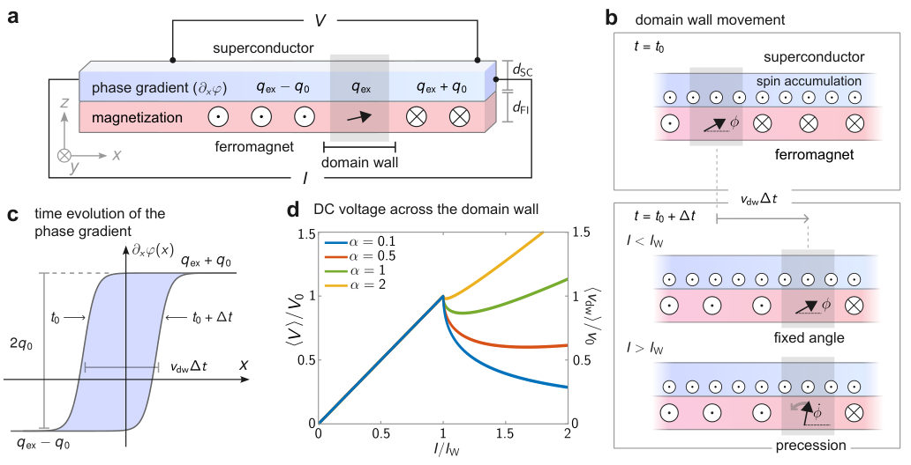
<figcaption class="paper-figure-caption"><b>Fig 1.</b> Figure 1. (a) Superconductor–ferromagnet bilayer. Magnetic proximity effect and SOC induce into the superconductor a helical superfluid momentum q0, whose sign changes across the domain wall. Supercurrent I induces an additional superfluid momentum qex. (b) Spin accumulation generated by the supercurrent via the spin-galvanic effect drives the domain wall (DW) at velocity vdw. Below the Walker breakdown current, I &lt; IW, the wall moves with a fixed shape, while above the Walker breakdown current, I &gt; IW, the spins in the domain wall precess while the wall moves. (c) Snapshots of the superconducting superfluid momentum at two distinct times during DW motion. The voltage V = 2q0vdw across the...</figcaption>
</figure>
<figure class="paper-figure-card">
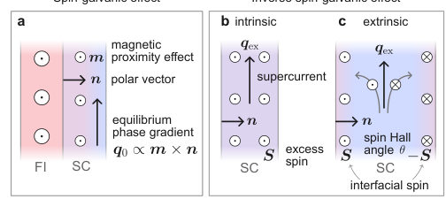
<figcaption class="paper-figure-caption"><b>Fig 2.</b> Figure 2. (a) Generation of equilibrium superfluid momentum by spin-galvanic effect. Magnetic proximity effect induces a Zeeman field in the SC (with direction m). Together with the polar vector n this generates a current, which is canceled by a superfluid momentum q0. (b) and (c) Generation of spin by supercurrent due to inverse spin galvanic effect (ISGE). The intrinsic ISGE generates an excess spin in the bulk of the SC due to broken inversion symmetry. The extrinsic ISGE (spin Hall effect) generates a transverse spin current which shows up as interfacial spin. Both mechanisms involve the polar vector n.</figcaption>
</figure>
<figure class="paper-figure-card">
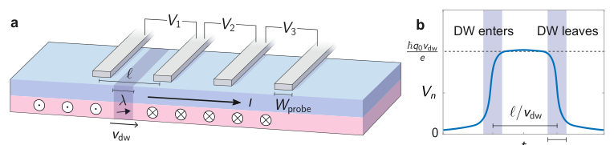
<figcaption class="paper-figure-caption"><b>Fig 3.</b> Figure 3. Electrical detection of the domain wall motion. (a) Setup with multiple voltage probes. (b) Sketch of the time-dependent voltage signal due to domain wall movement. The voltage is maximized when the domain wall is between the two probes. When the domain wall leaves, the signal decays sharply over a time-scale determined by the domain wall speed, and the domain wall size or the superconductor coherence length. After this initial period, a tail remains, which is exponentially suppressed in ∆ kBT , and extends over the charge imbalance relaxation time.</figcaption>
</figure>
</div>

<p><strong>Summary.</strong> This paper theoretically models the control of magnetic domain walls in superconductor/ferromagnetic insulator bilayers using supercurrents. It shows that the superconducting state allows for low-power, measurable motion of these walls by generating an equilibrium superfluid momentum. This work is significant for developing energy-efficient memory elements for cryogenic quantum computing applications.</p>
<p><strong>Why it may be interesting.</strong> The work provides a detailed theoretical framework connecting superconducting phenomena (supercurrents, superfluid momentum) directly to spintronic memory elements (domain walls), offering insights into energy-efficient quantum/cryogenic device operation.</p>
<details>
<summary>Detailed structure</summary>
<p><strong>Main problem.</strong> The research aims to develop a fast, reliable magnetic memory technology for cryogenic computing by controlling magnetic domain walls using superconducting supercurrents.</p>
<p><strong>Main result.</strong> Supercurrent-driven motion of domain walls is predicted, generating a measurable voltage and dissipating power orders of magnitude lower than in normal state setups. The mechanism relies on the generation of an equilibrium superfluid momentum ($q_0$).</p>
<p><strong>Method.</strong> The analysis employs advanced theoretical techniques including quasiclassical Green's functions (Keldysh formalism), coupled action formulations for superconducting and magnetic systems, and solving coupled differential equations for domain wall dynamics.</p>
<p><strong>Model / system.</strong> The system is a superconductor/ferromagnetic insulator bilayer. The physics involves coupling between supercurrent-induced spin accumulation (via ISGE) and the magnetization dynamics described by modified LLG equations.</p>
<p><strong>Key observables.</strong> Domain wall velocity ($v_{dw}$), measurable voltage ($V \propto q_0 v_{dw}$), dissipated power ($P$), and temperature increase ($\Delta T$).</p>
<p><strong>Important parameters / regimes.</strong> Supercurrent density ($j$), superconducting gap ($\Delta$), spin-orbit coupling strength, Gilbert damping parameter ($\alpha$), and the equilibrium superfluid momentum ($q_0$).</p>
<p><strong>Assumptions / limitations.</strong> The analysis often assumes an adiabatic limit for motion (low speed) and that the FI is much thinner than the SC to ensure spin-charge coupling dominates over Oersted fields.</p>
<p><strong>Figures summary.</strong> Figures illustrate the physical setup, domain wall dynamics under varying currents relative to a critical current ($I_W$), snapshots of superfluid momentum during motion, and theoretical derivations relating voltage/power to velocity.</p>
<p><strong>Paper structure.</strong> The paper builds from establishing the fundamental coupling mechanisms (ISGE, $q_0$ generation) to deriving the coupled equations of motion for domain wall coordinates. It then analyzes the resulting dynamics, power balance ($P=D$), and finally addresses thermal stability by calculating temperature increases due to dissipation.</p>
</details>
<details>
<summary>Abstract</summary>
<p>Establishing a versatile, fast and reliable magnetic memory technology is a giant bottleneck for cryogenic computing since present-day room-temperature solutions either cease to work or consume too much power. The long-term goal of superconducting spintronics has been to overcome this bottleneck by generating magnetic memories with equal-spin triplet supercurrent driven through them to control their magnetization direction. This path has been hampered by the short spin relaxation length and strong anisotropy in ferromagnets. Here we show how the supercurrent driven generation of spin accumulation in a superconductor/magnetic insulator bilayer, together with Gilbert damping of magnetization lead to a motion of magnetic domain walls. This manifests as a local voltage across the wall, which allows its position to be identified. Associated with this voltage and the current, there is Joule power which is dissipated via the Gilbert damping. The power required to maintain domain wall motion is orders of magnitude smaller than in the normal state, where most of the power is wasted in producing the current.</p>
</details>
<p><sub><a href="#top">↑ back to top</a></sub></p>

<p><a id="paper-2606.18931"></a></p>
<h3 id="the-electric-field-driven-intermediate-state-of-three-dimensional-superconductors"><a href="http://arxiv.org/abs/2606.18931v1">The electric-field-driven intermediate state of three-dimensional superconductors</a></h3>
<p><strong>Authors:</strong> Ion Cojocari, Enzo Andreani, Paola Verniere, Florian Pallier, Marc Gabay, Miguel Monteverde, Claire Marrache-Kikuchi, Shamashis Sengupta<br>
<strong>Type:</strong> both · <strong>Category:</strong> other · <strong>PDF:</strong> <a href="https://arxiv.org/pdf/2606.18931v1">https://arxiv.org/pdf/2606.18931v1</a><br>
<strong>Analysis basis:</strong> full PDF text, analyzed in chunks
<strong>Topic relevance:</strong> 🔥 <code>non-equilibrium dynamics</code> <strong>4/5</strong> · <code>Keldysh / 2PI / non-Gaussian methods</code> <strong>3/5</strong> · <code>driven-dissipative phase transition</code> <strong>3/5</strong> · <code>methods for driven-dissipative</code> <strong>3/5</strong> · <code>non-equilibrium universality</code> <strong>2/5</strong> · <code>Frenkel-Kontorova</code> <strong>1/5</strong> · <code>correlated / nonlocal dissipation</code> <strong>1/5</strong></p>
<div class="figure-strip-hint">↔ Scroll figures horizontally</div>
<div class="paper-figures-scroll">
<figure class="paper-figure-card">
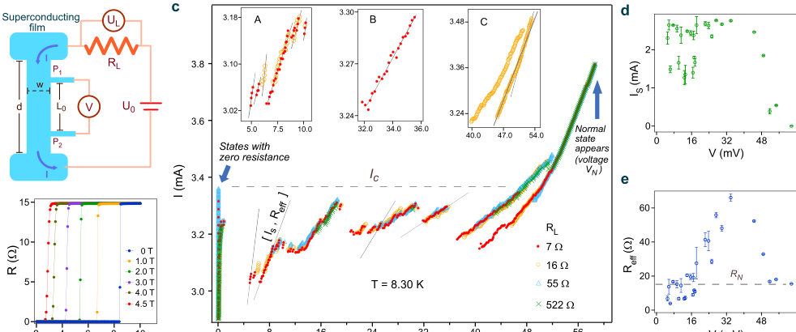
<figcaption class="paper-figure-caption"><b>Fig 1.</b> FIG. 1. (a) Circuit implemented for measuring transport behaviour of the superconducting film without current-biasing the sample. (b) Resistance (R) of the film measured in four-probe configuration as a function of temperature (T), with magnetic fields applied in the perpendicular direction. (c) I-V plots obtained by increasing the dc voltage U0. Insets A, B, C: Close-up view of data points in some selected regions. (d,e) Values of the intercept on current-axis (IS) and effective resistance (Reff), extracted from linear fits at different parts of the I-V curves, plotted as a function of V . Each point corresponds to the mean value of the voltage range used for the linear fit.</figcaption>
</figure>
<figure class="paper-figure-card">
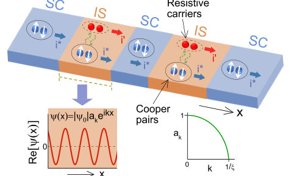
<figcaption class="paper-figure-caption"><b>Fig 2.</b> FIG. 3. When an electric field penetrates into the super- conducting film, it is broken up into alternating regions of intermediate state (IS) and superconducting state (SC). The I-V relations observed by us can be described as an addition of two current components inside IS domains - a supercur- rent (i∗) carried by Cooper pairs and a dissipative current (i′) carried by resistive carriers. It is not implied that the two channels are spatially separated. Voltage gradients lead to dynamical fluctuations of both the amplitude and phase of the superconducting order parameter.</figcaption>
</figure>
</div>

<p><strong>Summary.</strong> This paper investigates the unique 'intermediate state' found in 3D superconductors under applied electric fields. By combining experiments on Nb films with Ginzburg-Landau theory, the authors characterize a nonclassical regime where superconducting supercurrent coexists with measurable dissipative charge transport. This work provides insight into how quantum fluids behave when driven far from thermodynamic equilibrium.</p>
<p><strong>Why it may be interesting.</strong> This work explores non-equilibrium dynamics in superconductors, which is a key area bridging condensed matter physics with open quantum systems concepts. The analysis of current decomposition into supercurrent and dissipative components touches upon energy dissipation mechanisms far from equilibrium.</p>
<details>
<summary>Detailed structure</summary>
<p><strong>Main problem.</strong> The study investigates the non-equilibrium electronic state of three-dimensional superconductors when subjected to finite electric fields, focusing on an 'intermediate state' where supercurrent and dissipative charge transport coexist.</p>
<p><strong>Main result.</strong> The authors demonstrate the existence of an Electric-Field-Driven Intermediate State (EFDIS) characterized by linear segments in I-V curves, suggesting a nonclassical regime distinct from simple parallel conduction models.</p>
<p><strong>Method.</strong> The research combines experimental measurements on superconducting films with theoretical modeling based on Ginzburg-Landau theory to analyze order parameter fluctuations under bias.</p>
<p><strong>Model / system.</strong> The system is pristine, unpatterned 3D superconducting films (Nb). The analysis uses the Ginzburg-Landau framework, simplifying the problem to a one-dimensional variation of the order parameter $\psi(x)$ along the length $L$.</p>
<p><strong>Key observables.</strong> Resistance ($R$), effective conductance ($ ext{g}_{    ext{eff}}$), supercurrent intercept ($I_S$), and the relationship between voltage drop ($v$) and the rate of change of the wavevector ($k$).</p>
<p><strong>Important parameters / regimes.</strong> Coherence length ($\xi$), applied magnetic field ($H$), temperature ($T$), and source voltage ($U_0$).</p>
<p><strong>Assumptions / limitations.</strong> The analysis assumes small magnetic fields, neglects the vector potential $\mathbf{A}$ in some derivations, and models the system as having alternating regions of IS and SC.</p>
<p><strong>Figures summary.</strong> Figures show I-V curves under applied voltage/field, illustrating distinct linear segments corresponding to the EFDIS. Plots also quantify the dependence of $I_S$ and $ ext{R}_{    ext{eff}}$ on bias voltage.</p>
<p><strong>Paper structure.</strong> The paper moves from experimental observation (measuring $I$-$V$ curves) to theoretical modeling using Ginzburg-Landau theory, deriving relationships between voltage drop and order parameter fluctuations ($v \propto |	ext{d}k/	ext{d}t|$).</p>
</details>
<details>
<summary>Abstract</summary>
<p>The coexistence of superconductivity and finite electric fields may enable access to intriguing forms of electronic states. We demonstrate the emergence of an intermediate state in which electric fields penetrate the system while superconductivity still persists. Our measurements reveal a nonclassical regime characterized by the simultaneous presence of supercurrent and dissipative charge transport. This state, realized in a pristine unpatterned three-dimensional system, arises from electric-field-driven order parameter fluctuations. It provides a platform to explore dissipative states of charged quantum fluids far from equilibrium.</p>
</details>
<p><sub><a href="#top">↑ back to top</a></sub></p>

<p><a id="paper-2606.18563"></a></p>
<h3 id="time-resolved-synchronization-analysis-of-stacked-intrinsic-josephson-junctions-of-a-cuprate-superconductor-with-frequency-modulated-terahertz-radiation-spectra"><a href="http://arxiv.org/abs/2606.18563v1">Time-resolved synchronization analysis of stacked intrinsic Josephson junctions of a cuprate superconductor with frequency-modulated terahertz radiation spectra</a></h3>
<p><strong>Authors:</strong> Masashi Miyamoto, Keisuke Mizoguchi, Ryota Kobayashi, Nozomi Yagyu, Manabu Tsujimoto, Itsuhiro Kakeya<br>
<strong>Type:</strong> experiment · <strong>Category:</strong> strongly correlated electrons · <strong>PDF:</strong> <a href="https://arxiv.org/pdf/2606.18563v1">https://arxiv.org/pdf/2606.18563v1</a><br>
<strong>Analysis basis:</strong> full PDF text, analyzed in chunks
<strong>Topic relevance:</strong> 🔥 <code>non-equilibrium dynamics</code> <strong>4/5</strong> · <code>driven-dissipative phase transition</code> <strong>3/5</strong> · <code>methods for driven-dissipative</code> <strong>3/5</strong> · <code>correlated / nonlocal dissipation</code> <strong>2/5</strong> · <code>non-equilibrium universality</code> <strong>2/5</strong> · <code>Keldysh / 2PI / non-Gaussian methods</code> <strong>1/5</strong> · <code>interference shaping light</code> <strong>1/5</strong> · <code>quantum optics experiment</code> <strong>1/5</strong></p>
<div class="figure-strip-hint">↔ Scroll figures horizontally</div>
<div class="paper-figures-scroll">
<figure class="paper-figure-card">
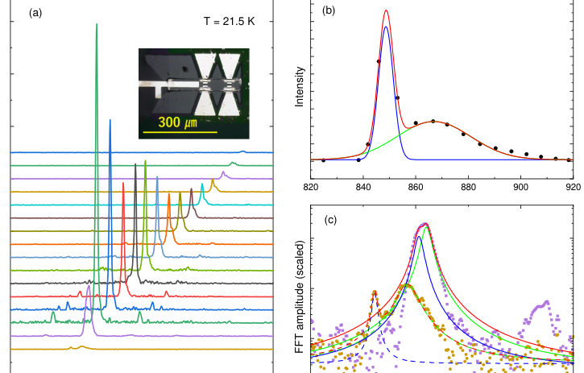
<figcaption class="paper-figure-caption"><b>Fig 1.</b> FIG. 1. (a) Mesa voltage dependence of the radiation spectrum for Vm = 0 at bath temperature</figcaption>
</figure>
<figure class="paper-figure-card">
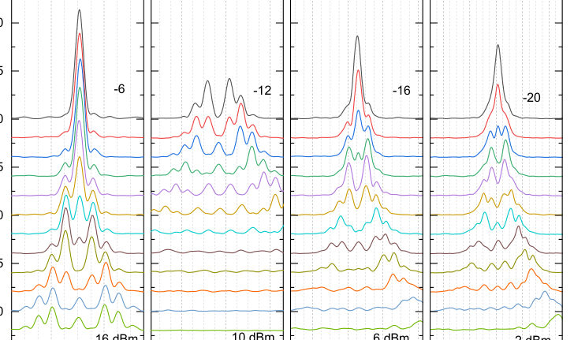
<figcaption class="paper-figure-caption"><b>Fig 2.</b> FIG. 2. Frequency modulated spectrum when superimposed frequency fm is varied from 3.00 GHz</figcaption>
</figure>
<figure class="paper-figure-card">
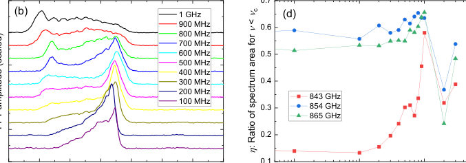
<figcaption class="paper-figure-caption"><b>Fig 3.</b> FIG. 3. (a) FM spectra centred at 865 GHz with VB0 = 2.45 V (broken curves), where IUM(ν) has</figcaption>
</figure>
<figure class="paper-figure-card">
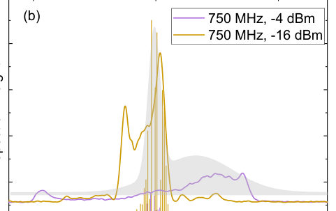
<figcaption class="paper-figure-caption"><b>Fig 4.</b> FIG. 4. (a) Spectra at fm = 100 MHz, Pm = −20 dBm, VB0 = 2.42 (black), 2.36 V (red).</figcaption>
</figure>
<figure class="paper-figure-card">
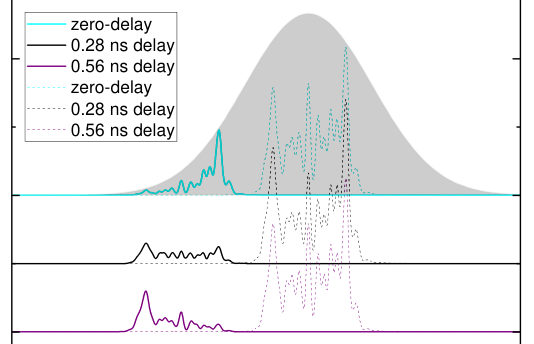
<figcaption class="paper-figure-caption"><b>Fig 5.</b> FIG. 5. Numerically obtained FM spectra at fm = 1 GHz νc = 840 and 870 GHz (solid and broken</figcaption>
</figure>
</div>

<p><strong>Summary.</strong> The study investigates the ultrafast dynamics of Josephson plasma oscillations in cuprate superconductors by analyzing their response to frequency-modulated terahertz radiation. By fitting spectral sidebands with models incorporating a finite synchronization time ($ au_s$), the authors quantify the non-equilibrium plasmon lifetime, providing deep insight into the coupled electrodynamics of these superconducting junctions.</p>
<p><strong>Why it may be interesting.</strong> This work bridges solid-state superconductivity (high-Tc cuprates) with non-equilibrium quantum dynamics, using THz spectroscopy as a powerful probe for collective plasma oscillations and relaxation processes in strongly correlated materials.</p>
<details>
<summary>Detailed structure</summary>
<p><strong>Main problem.</strong> The study aims to perform a time-resolved synchronization analysis of stacked intrinsic Josephson junctions (IJJs) in a cuprate superconductor when subjected to frequency-modulated terahertz radiation spectra.</p>
<p><strong>Main result.</strong> The analysis successfully estimates a synchronized relaxation time ($  au_s \simeq 0.28    ext{ ns}$) by analyzing spectral transformations, revealing sub-nanosecond non-equilibrium dynamics of the coupled Josephson plasma.</p>
<p><strong>Method.</strong> The researchers used frequency-modulated terahertz spectroscopy on $    ext{Bi}<em 8_δ="8+δ">2   ext{Sr}_2   ext{CaCu}_2 ext{O}</em>$ IJJs, comparing measured sideband spectra to theoretical models incorporating a finite relaxation time ($ au_s$).</p>
<p><strong>Model / system.</strong> The physical system is a Josephson Plasma Emitter (JPE) formed by stacked intrinsic Josephson junctions in the cuprate superconductor $ ext{Bi}<em 8_δ="8+δ">2   ext{Sr}_2   ext{CaCu}_2 ext{O}</em>$, coupled with external patch antennas. The dynamics are governed by nonlinear oscillator behavior exhibiting AC Josephson effect excitation.</p>
<p><strong>Key observables.</strong> Unmodulated intensity distribution ($I_{\mathrm{UM}}(\omega)$), frequency-modulated spectra ($I_{\mathrm{FM}}(\omega)$), and the spectral intensity ratio $\eta(   ext{fm}, 
u_c)$.</p>
<p><strong>Important parameters / regimes.</strong> Synchronization relaxation time ($  au_s$), modulation frequencies ($f_m$ up to $1	ext{ GHz}$), and central resonance frequencies ($
u_c \approx 840-870 ext{ GHz}$).</p>
<p><strong>Assumptions / limitations.</strong> The analysis assumes that the spectral changes observed require introducing a finite relaxation time $   au_s$, which is interpreted as the lifetime of the macroscopic plasmon.</p>
<p><strong>Figures summary.</strong> Figures illustrate the double Gaussian peak structure in unmodulated spectra, and show how sideband intensities in FM spectra shift and change shape as a function of $f_m$ and assumed $    au_s$.</p>
<p><strong>Paper structure.</strong> The paper progresses from characterizing the static spectrum ($I_{\mathrm{UM}}(\omega)$) to analyzing the frequency-modulation response. It then introduces theoretical models incorporating finite relaxation times ($  au_s$) to quantitatively reproduce observed spectral transformations across varying $f_m$ regimes.</p>
</details>
<details>
<summary>Abstract</summary>
<p>Terahertz radiation from $\text{Bi}_2\text{Sr}_2\text{CaCu}_2\text{O}_{8+δ}$ intrinsic Josephson junctions (IJJs) provides an ideal platform to study the synchronization of a macroscopic quantum system. Here, we present a spectral analysis of a frequency-modulated Josephson plasma emitter coupled with patch antennas. In the unmodulated intensity distribution as a function of radiation frequency $I_{\mathrm{UM}}(ω)$, we observe a double Gaussian peak structure. Crucially, double-peak spectra obtained at a constant bias voltage imply either a rapid temporal distribution of resonances or their simultaneous excitation, driven by the mutual electromagnetic coupling between the IJJ mesa and the antennas. At low modulation frequencies $f_m$, the spectra are well reproduced by the products of $I_{\mathrm{UM}}(ω)$ and frequency combs, yielding a synchronized relaxation time $τ_s \simeq 0.28\text{ ns}$. Incorporating $τ_s$ quantitatively reproduces a drastic spectral transformation observed around $f_m \sim 1\text{ GHz}$, unveiling the sub-nanosecond non-equilibrium dynamics of coupled Josephson plasma.</p>
</details>
<p><sub><a href="#top">↑ back to top</a></sub></p>

<p><a id="paper-2606.19310"></a></p>
<h3 id="exclusion-statistics-as-a-thermodynamic-resource-in-quantum-heat-engines"><a href="http://arxiv.org/abs/2606.19310v1">Exclusion Statistics as a Thermodynamic Resource in Quantum Heat Engines</a></h3>
<p><strong>Authors:</strong> Sampurna Karmakar, Aziz Hasan, Sourin Das<br>
<strong>Type:</strong> theory · <strong>Category:</strong> statistical mechanics · <strong>PDF:</strong> <a href="https://arxiv.org/pdf/2606.19310v1">https://arxiv.org/pdf/2606.19310v1</a><br>
<strong>Analysis basis:</strong> full PDF text, analyzed in chunks
<strong>Topic relevance:</strong> <code>exotic spin models in light-matter</code> <strong>3/5</strong> · <code>spintronics-quantum-optics interface</code> <strong>3/5</strong> · <code>driven-dissipative phase transition</code> <strong>2/5</strong> · <code>non-equilibrium dynamics</code> <strong>2/5</strong> · <code>non-equilibrium universality</code> <strong>2/5</strong> · <code>Frenkel-Kontorova</code> <strong>1/5</strong> · <code>Keldysh / 2PI / non-Gaussian methods</code> <strong>1/5</strong> · <code>analog quantum simulation</code> <strong>1/5</strong> · <code>correlated / nonlocal dissipation</code> <strong>1/5</strong> · <code>methods for driven-dissipative</code> <strong>1/5</strong></p>
<div class="figure-strip-hint">↔ Scroll figures horizontally</div>
<div class="paper-figures-scroll">
<figure class="paper-figure-card">
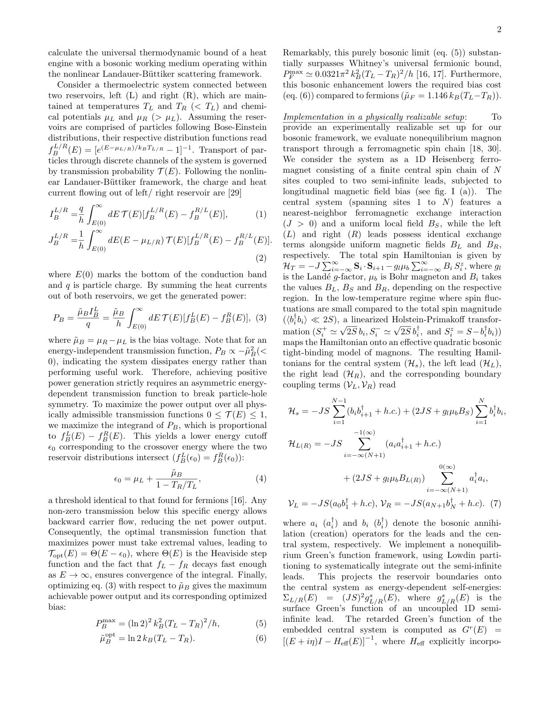
<figcaption class="paper-figure-caption"><b>Fig 1.</b> Low-resolution page preview, page 2</figcaption>
</figure>
<figure class="paper-figure-card">
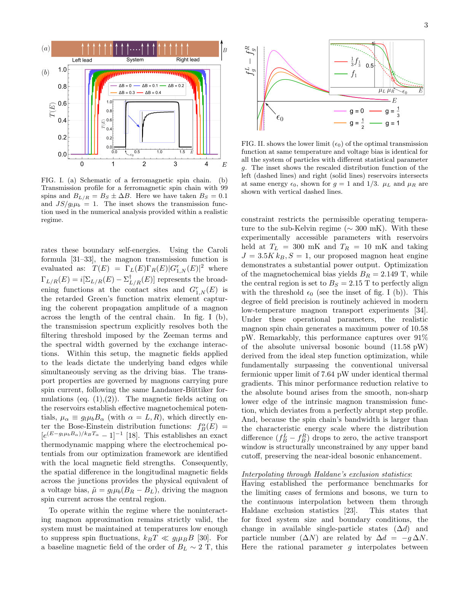
<figcaption class="paper-figure-caption"><b>Fig 2.</b> Low-resolution page preview, page 3</figcaption>
</figure>
<figure class="paper-figure-card">
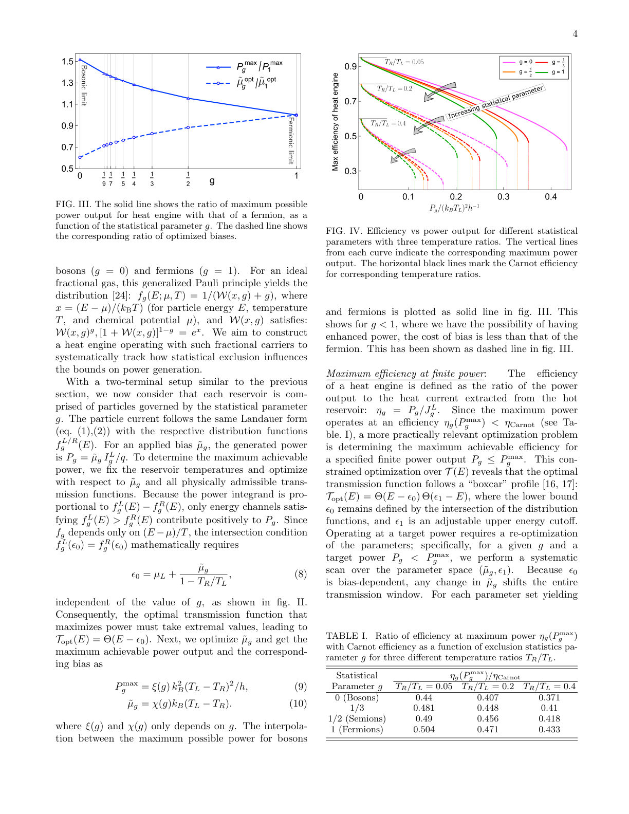
<figcaption class="paper-figure-caption"><b>Fig 3.</b> Low-resolution page preview, page 4</figcaption>
</figure>
<figure class="paper-figure-card">
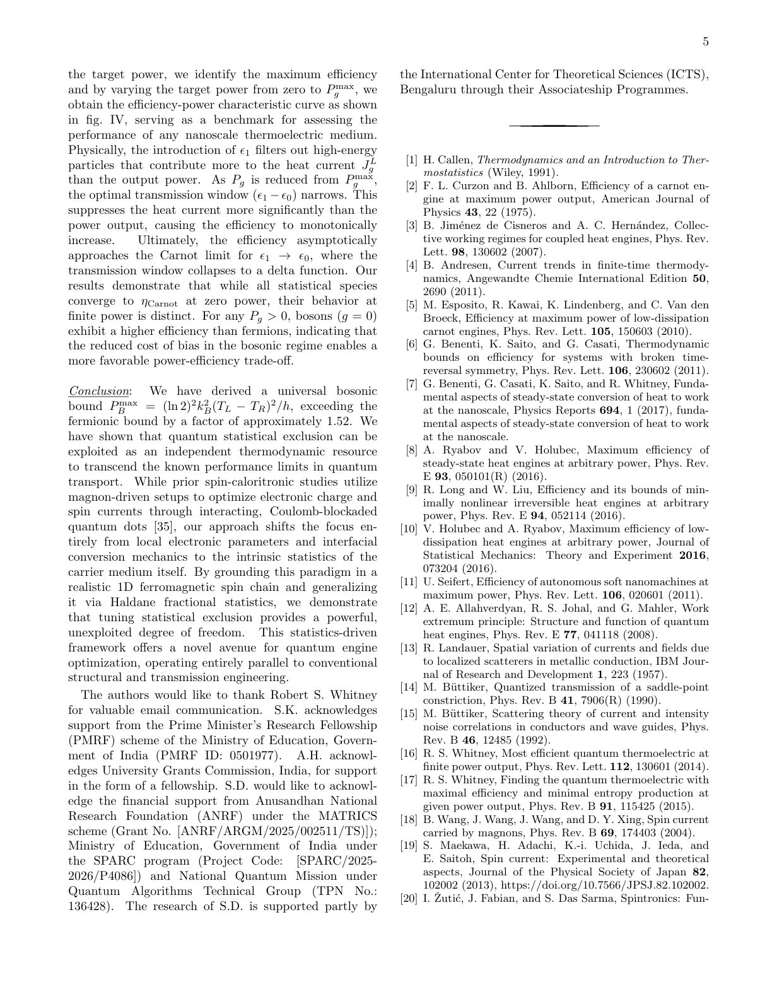
<figcaption class="paper-figure-caption"><b>Fig 4.</b> Low-resolution page preview, page 5</figcaption>
</figure>
<figure class="paper-figure-card">
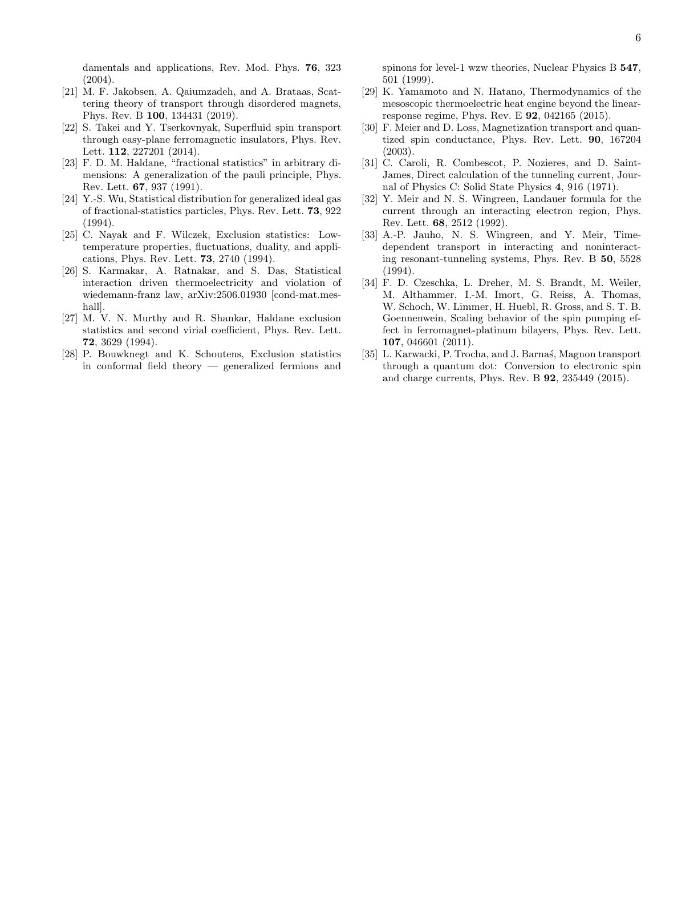
<figcaption class="paper-figure-caption"><b>Fig 5.</b> Low-resolution page preview, page 6</figcaption>
</figure>
</div>

<p><strong>Summary.</strong> This work demonstrates that the statistical nature of charge carriers fundamentally limits the maximum power achievable by quantum heat engines. By modeling magnon transport and incorporating Haldane's fractional exclusion statistics, the authors show that bosonic behavior significantly enhances this limit over fermionic predictions, establishing statistical exclusion as a tunable thermodynamic resource.</p>
<p><strong>Why it may be interesting.</strong> It connects fundamental concepts of quantum statistics (bosonic/fermionic nature) directly to macroscopic thermodynamic performance metrics like power output in mesoscopic devices.</p>
<details>
<summary>Detailed structure</summary>
<p><strong>Main problem.</strong> To investigate quantum statistical exclusion as a thermodynamic resource by comparing the maximum power extractable from heat engines operating with different carrier statistics (fermionic vs. bosonic).</p>
<p><strong>Main result.</strong> Bosonic working media yield strictly enhanced universal maximum power compared to fermionic limits, and Haldane's fractional statistics parameterizes this enhancement continuously.</p>
<p><strong>Method.</strong> The analysis uses the nonlinear Landauer-Büttiker framework applied to a quantum thermoelectric heat engine model.</p>
<p><strong>Model / system.</strong> The system is modeled using magnon transport through a ferromagnetic spin chain, analyzed via an effective quadratic bosonic tight-binding Hamiltonian in the low-temperature limit.</p>
<p><strong>Key observables.</strong> Maximum power ($P_{	ext{max}}$), efficiency ($\eta$), and the ratio of maximum power output vs. fermionic bound.</p>
<p><strong>Important parameters / regimes.</strong> Haldane exclusion statistics parameter ($g$), temperature difference ($T_L - T_R$), and magnetic field strengths defining chemical potentials.</p>
<p><strong>Assumptions / limitations.</strong> The analysis relies on the nonlinear Landauer-Büttiker framework, assuming low temperatures for noninteracting magnon approximation.</p>
<p><strong>Figures summary.</strong> Figures illustrate the schematic of the spin chain setup, transmission profiles showing filtering thresholds, and plots comparing power output ratios versus the statistics parameter g.</p>
<p><strong>Paper structure.</strong> The paper establishes the theoretical bounds using Landauer-Büttiker formalism, compares fermionic vs. bosonic limits, introduces Haldane interpolation, and applies this framework to a magnon transport model to quantify the enhancement.</p>
</details>
<details>
<summary>Abstract</summary>
<p>The maximum power extractable from a quantum thermoelectric heat engine operating with free fermion carriers is bounded by the universal Whitney limit, $P_{\text{fermion}}^{\max} \simeq 0.0321π^2 k_B^2(T_L-T_R)^2/h$. We demonstrate that this bound is not fundamental to quantum heat engines but is instead an artifact of fermionic statistics. Within the nonlinear Landauer-Büttiker framework, a bosonic working medium yields a strictly enhanced universal maximum power, $P_{\text{boson}}^{\max} = (\ln 2)^2\, k_B^2(T_L-T_R)^2/h$, exceeding the fermionic limit by a factor of $(\ln 2)^2/(0.0321π^2) \approx 1.52$. We propose magnon transport through a ferromagnetic spin chain as an experimentally viable bosonic realization. Incorporating Haldane fractional exclusion statistics with parameter $g$ provides a continuous interpolation between the bosonic ($g = 0$) and fermionic ($g = 1$) limits, revealing a monotonic enhancement of maximum power for $g < 1$ at reduced bias cost. These results establish quantum statistical exclusion as a previously unrecognized and independently tunable thermodynamic resource, opening performance regimes inaccessible to conventional carrier-engineering approaches.</p>
</details>
<p><sub><a href="#top">↑ back to top</a></sub></p>

<p><a id="paper-2606.18657"></a></p>
<h3 id="bidirectional-motion-of-antiferromagnetic-skyrmions-driven-by-competing-spin-torques"><a href="http://arxiv.org/abs/2606.18657v1">Bidirectional motion of antiferromagnetic skyrmions driven by competing spin torques</a></h3>
<p><strong>Authors:</strong> Laichuan Shen, Wang Kang, Xichao Zhang, Qiuping Huang, Yalin Lu, Zhifeng Zhu, Yan Zhou<br>
<strong>Type:</strong> theory · <strong>Category:</strong> other · <strong>PDF:</strong> <a href="https://arxiv.org/pdf/2606.18657v1">https://arxiv.org/pdf/2606.18657v1</a><br>
<strong>Analysis basis:</strong> full PDF text, analyzed in chunks
<strong>Topic relevance:</strong> <code>non-equilibrium dynamics</code> <strong>3/5</strong> · <code>spintronics-quantum-optics interface</code> <strong>3/5</strong> · <code>driven-dissipative phase transition</code> <strong>2/5</strong> · <code>non-equilibrium universality</code> <strong>2/5</strong> · <code>Frenkel-Kontorova</code> <strong>1/5</strong> · <code>Keldysh / 2PI / non-Gaussian methods</code> <strong>1/5</strong> · <code>analog quantum simulation</code> <strong>1/5</strong> · <code>correlated / nonlocal dissipation</code> <strong>1/5</strong> · <code>exotic spin models in light-matter</code> <strong>1/5</strong> · <code>methods for driven-dissipative</code> <strong>1/5</strong></p>
<div class="figure-strip-hint">↔ Scroll figures horizontally</div>
<div class="paper-figures-scroll">
<figure class="paper-figure-card">
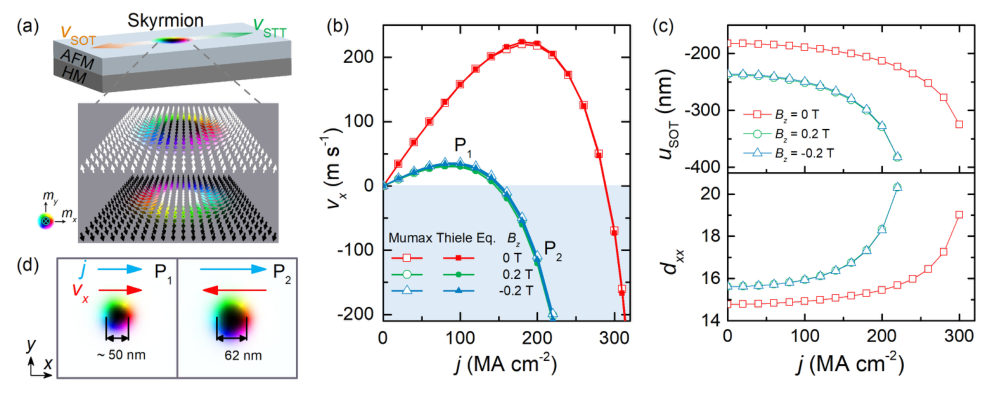
<figcaption class="paper-figure-caption"><b>Fig 1.</b> Figure 1: (a) Top panel: Sketch of the calculation model, composed of an antiferromagnet (AFM) and a heavy metal (HM). The yellow and green arrows represent the velocities of skyrmions driven by SOT and STT, respectively. Bottom panel: Magnetic texture of an antiferromagnetic skyrmion in a two-sublattice model, with colored areas reflecting the in- plane component of magnetization and black (white) areas indicating the magnetizations along the −z (+z) direction. (b) Skyrmion velocity vx as a function of the current density j with different values of magnetic field Bz. Hollow and solid symbols represent the results obtained from micromagnetic simulations and Thiele equation, respectively....</figcaption>
</figure>
<figure class="paper-figure-card">
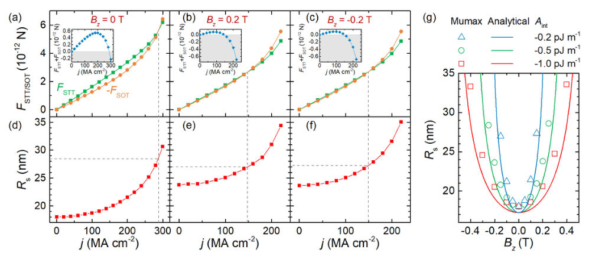
<figcaption class="paper-figure-caption"><b>Fig 2.</b> Figure 2: (a)-(c) Calculated forces induced by STT (FSTT) and SOT (FSOT) as a function of current density j for different values of Bz. The vertical dashed line indicates the current at which the strengths of FSTT and FSOT are reversed. The insets show the net force (FSTT + FSOT). (d)-(f) Skyrmion radius Rs as a function of the current j, where Rs is defined as the radius of the contour with nz = 0. (g) The dependence of the skyrmion radius Rs on the magnetic field Bz, with differ- ent values of the interlayer coupling strength Aint. The symbols are the simulation results with j = 0; the curves represent the analytical results.</figcaption>
</figure>
<figure class="paper-figure-card">
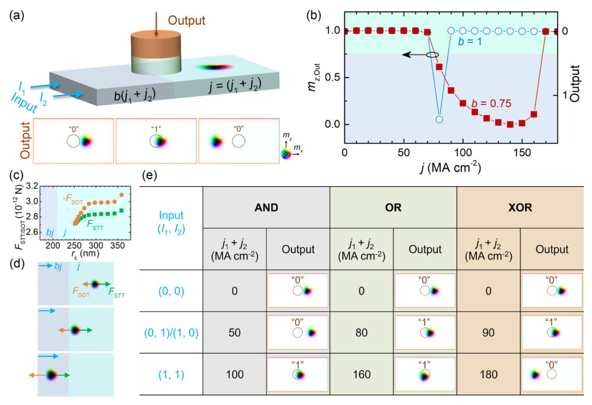
<figcaption class="paper-figure-caption"><b>Fig 3.</b> Figure 3: (a) Schematic of the skyrmion-based logic device. Two currents I1 and I2 (with current densities j1 and j2) are designed as logic inputs; logic input “1” (“0”) corresponds to (not) applying current to the device. The logic outputs “1” and “0” are defined as the presence and absence of the skyrmion underneath the middle detector, respectively (bottom panel). Here, b represents the ratio of the current density on the left side of racetrack to that on the right side. (b) Mag- netization mz,Out of the sublayer underneath the middle detector for different current densities j with two values of b = 1 and 0.75. The decrease in mz,Out from ∼ +1 is due to the skyrmion entering the...</figcaption>
</figure>
<figure class="paper-figure-card">
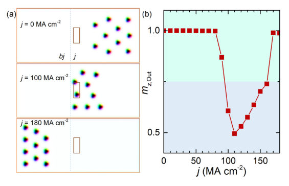
<figcaption class="paper-figure-caption"><b>Fig 4.</b> Figure 4: (a) Snapshots of magnetic structures under different currents. The box in the middle indicates the detection area. (b) Magnetization mz,Out of the sublayer underneath the detector for different current densities j. In the simulations, the model size is 1600 × 700 × 3 nm3, the size of square detector is 80 × 200 nm2, the simulation time is 60 ns, b = 0.75, Bz = 0.23 T, and α = 0.05.</figcaption>
</figure>
</div>

<p><strong>Summary.</strong> This work explores how antiferromagnetic skyrmions exhibit bidirectional motion when subjected to competing spin torques (STT and SOT). By analyzing the force balance governing this motion, the authors demonstrate that a critical current threshold causes the skyrmion direction to reverse. This controllable mechanism is then leveraged to propose and validate programmable logic gates based on magnetic racetrack devices.</p>
<p><strong>Why it may be interesting.</strong> While focused on spintronics rather than fundamental quantum information, the study deals with non-equilibrium dynamics of topological textures driven by external currents, which shares conceptual links with open quantum systems modeling where dissipation and driving fields are crucial.</p>
<details>
<summary>Detailed structure</summary>
<p><strong>Main problem.</strong> The study investigates the previously unexplored bidirectional dynamics of antiferromagnetic skyrmions when driven by competing spin-transfer torque (STT) and spin-orbit torque (SOT). The goal is to utilize this mechanism for developing programmable logic devices.</p>
<p><strong>Main result.</strong> It was computationally demonstrated that AFM skyrmion motion can reverse direction above a critical current threshold. This bidirectional motion, tunable by an external magnetic field, enables the design of functional logic gates.</p>
<p><strong>Method.</strong> The dynamics are analyzed using micromagnetic simulations solving the LLG equation and supplemented by the Thiele approach for analytical understanding of the force balance.</p>
<p><strong>Model / system.</strong> The system models antiferromagnetic skyrmions in a structure coupled with a heavy metal layer to induce interfacial Dzyaloshinskii-Moriya interaction. The dynamics are governed by current-induced STT and SOT forces acting on the topological spin texture.</p>
<p><strong>Key observables.</strong> Skyrmion velocity ($v_x$), force components ($F_{STT}, F_{SOT}$), skyrmion radius ($R_s$), and logic gate output states (e.g., AND, OR, XOR).</p>
<p><strong>Important parameters / regimes.</strong> Driving current density ($j$), out-of-plane magnetic field ($B_z$), and the relative strengths of STT vs. SOT torques.</p>
<p><strong>Assumptions / limitations.</strong> The analysis relies on the Thiele equation approximation for describing the collective dynamics, and it assumes that logic operation limits can be controlled by local current modulation factors.</p>
<p><strong>Figures summary.</strong> Figures illustrate velocity reversal ($v_x$ vs $j$) showing positive to negative changes; force balance plots show sign reversals in net force; and schematics demonstrate AND/OR/XOR gate functionality based on current ranges.</p>
<p><strong>Paper structure.</strong> The paper first establishes the physical model and uses simulations to observe bidirectional motion. It then analyzes the underlying physics using the Thiele equation, showing that the reversal stems from competing torques affecting skyrmion size. Finally, it applies this understanding to design and demonstrate programmable logic gates in a racetrack geometry.</p>
</details>
<details>
<summary>Abstract</summary>
<p>Antiferromagnetic skyrmions are swirling topological spin textures with rich dynamics and intriguing transport properties, yet their bidirectional dynamics remain largely unexplored. Here, we investigate the dynamics of antiferromagnetic skyrmions driven by current-induced spin-transfer and spin-orbit torques. We computationally demonstrate that antiferromagnetic skyrmions moving in one direction at low current densities can reverse their motion direction when the driving current is above a threshold. Based on the Thiele approach analysis, we show that this bidirectional motion originates from a change in the relative strengths of two effective forces arising from spin-transfer and spin-orbit torques. Furthermore, exploiting this bidirectional motion on a single racetrack, we design programmable logic gates. Our results not only uncover a hidden mechanism for bidirectional skyrmion motion but also facilitate the development of antiferromagnet-based logic devices.</p>
</details>
<p><sub><a href="#top">↑ back to top</a></sub></p>

<p><a id="paper-2606.18461"></a></p>
<h3 id="persistent-current-and-orbital-magnetization-along-a-valley-contrasting-junction-in-bilayer-graphene-in-a-magnetic-field"><a href="http://arxiv.org/abs/2606.18461v1">Persistent current and orbital magnetization along a valley-contrasting junction in bilayer graphene in a magnetic field</a></h3>
<p><strong>Authors:</strong> K. Shizuya<br>
<strong>Type:</strong> theory · <strong>Category:</strong> other · <strong>PDF:</strong> <a href="https://arxiv.org/pdf/2606.18461v1">https://arxiv.org/pdf/2606.18461v1</a><br>
<strong>Analysis basis:</strong> full PDF text, analyzed in chunks
<strong>Topic relevance:</strong> <code>exotic spin models in light-matter</code> <strong>3/5</strong> · <code>spintronics-quantum-optics interface</code> <strong>3/5</strong> · <code>analog quantum simulation</code> <strong>2/5</strong> · <code>driven-dissipative phase transition</code> <strong>2/5</strong> · <code>non-equilibrium dynamics</code> <strong>2/5</strong> · <code>Keldysh / 2PI / non-Gaussian methods</code> <strong>1/5</strong> · <code>Kondo &amp; dissipative impurity</code> <strong>1/5</strong> · <code>methods for driven-dissipative</code> <strong>1/5</strong> · <code>non-equilibrium universality</code> <strong>1/5</strong></p>
<div class="figure-strip-hint">↔ Scroll figures horizontally</div>
<div class="paper-figures-scroll">
<figure class="paper-figure-card">
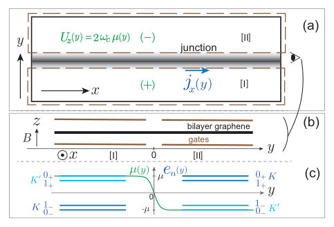
<figcaption class="paper-figure-caption"><b>Fig 1.</b> FIG. 1. (a) Schematic of a bilayer sample divided into two domains by electrostatic gating across a junction (shaded area). (b) Cross-section view of the sample. (c) Interlayer bias µ(y) = −µ tanh(y/wjc) with a reversal of polarity across y = 0. Shown in blue are the associated PZM spectra of val- leys K and K′ in the bulk domains |y| ≫wjc.</figcaption>
</figure>
<figure class="paper-figure-card">
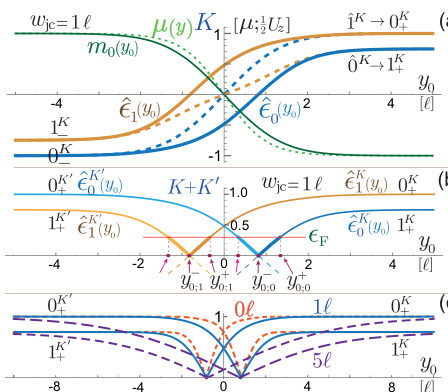
<figcaption class="paper-figure-caption"><b>Fig 2.</b> FIG. 2. (a) PZM spectra in valley K under a sharp bias µ(y) with wjc = 1ℓ. Levels (1K −, 0K −) in the lower domain y0 ≪0 get mixed across the junction at y0 ∼0 and turn into (0K + , 1K + ) for y0 ≫0, avoiding thereby level crossing. Another valley K′ also supports the same spectra with inverted signs, with orbital change (0K′ + , 1K′ + ) →(1K′ −, 0K′ −). (b) Electron spectra above the charge-neutral ground state in full valleys K + K′. Four channels (per spin) of active orbitally-mixed electron modes are trapped within the bulk band gap. (c) The level spectra scarcely change as the kink gets steeper wjc = 1ℓ→0 while they spread in width with increasing wjc.</figcaption>
</figure>
<figure class="paper-figure-card">
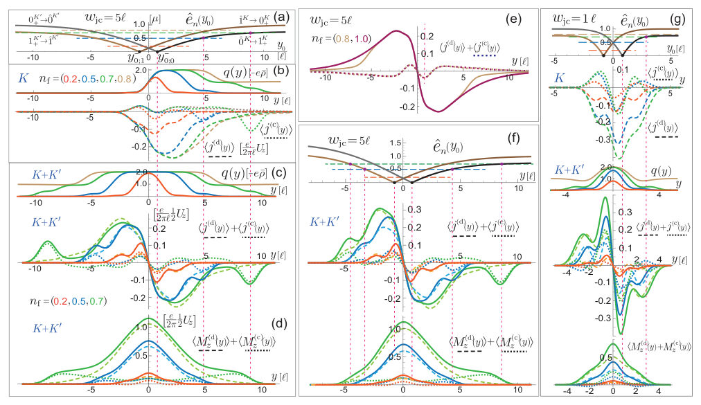
<figcaption class="paper-figure-caption"><b>Fig 3.</b> FIG. 3. Electron kink states formed along a valley-contrasting junction. (a) PZM spectra above the charge-neutral ground state under a bias µ(y) with wjc = 5ℓ. Charge density q(y) and current density jx(y) = j(c)(y) + j(d)(y) that develop (b) in valley K alone and (c) in full valleys K + K′ at filling nf = (0.2, 0.5, 0.7, 0.8). The current jx flows in one way on each side of the junction, showing two peak profiles associated with j(d) (dashed curves) and j(c) (dotted curves). (d) Orbital magnetization density Mz(y) = M (d) z (y) + M (c) z (y) in full valleys K + K′. The drift component ⟨M (d) z (y)⟩grows steadily with the kink state. In contrast, ⟨M (c) z (y)⟩slowly grows toward the edges y...</figcaption>
</figure>
</div>

<p><strong>Summary.</strong> This theoretical work analyzes how a spatially varying interlayer bias creates localized 'kink states' in bilayer graphene under a magnetic field. These states host persistent currents composed of drift and cyclotron components, which combine to form a controllable orbital magnetization channel. This mechanism suggests a pathway for realizing valley-based electronic devices.</p>
<p><strong>Why it may be interesting.</strong> While focused on condensed matter physics, the concept of controlling localized topological edge/junction modes via external fields and biases mirrors principles used in designing quantum interconnects or realizing artificial gauge fields relevant to AMO systems.</p>
<details>
<summary>Detailed structure</summary>
<p><strong>Main problem.</strong> The study investigates the observable electric and magnetic properties of localized electron states, known as 'kink states,' that form along a junction where the interlayer bias in bilayer graphene changes sign.</p>
<p><strong>Main result.</strong> These kink states support persistent currents composed of both drift and circulating components, which together create a controllable, quasi-one-dimensional channel of orbital magnetization useful for valley electronics.</p>
<p><strong>Method.</strong> The analysis involves diagonalizing the effective Hamiltonian derived from the low-energy physics of pseudo-zero modes in momentum space, using techniques like oscillator basis expansions and unitary transformations.</p>
<p><strong>Model / system.</strong> The system is bilayer graphene subjected to a perpendicular magnetic field ($B_z$) and an interlayer bias ($\mu(y)$) that varies spatially across a junction. The low-energy physics is captured by analyzing the pseudo-zero mode (PZM) levels.</p>
<p><strong>Key observables.</strong> Persistent current (total, drift $j^{(d)}$, circulating $j^{(c)}$), localized orbital magnetization $\langle M_z 
angle$, and energy spectra ($\hat{e}_n(y_0)$).</p>
<p><strong>Important parameters / regimes.</strong> Interlayer bias magnitude ($\mu$), magnetic field ($B$), junction width ($w_{jc}$), and Fermi level position ($\epsilon_F$).</p>
<p><strong>Assumptions / limitations.</strong> The analysis assumes the system is in the quantum Hall regime, and approximations are made regarding the relative strength of different coupling terms (e.g., $|e_0| = \mu \ll e_2$).</p>
<p><strong>Figures summary.</strong> Figures illustrate the sample geometry with the bias profile $\mu(y)$, show the evolution of PZM spectra across the junction, and depict the resulting trapped active electron modes.</p>
<p><strong>Paper structure.</strong> The paper systematically derives the effective Hamiltonian for the kink states, analyzes the energy spectrum's gap opening/avoidance, and then calculates the associated current components (drift vs. circulating) to demonstrate the net persistent magnetization channel.</p>
</details>
<details>
<summary>Abstract</summary>
<p>In a magnetic field bilayer graphene hosts an octet of pseudo-zero-mode electron levels nearly degenerate in orbitals $n=(0,1)$, valleys and spins. They split in valleys by electrostatic gating. In gated bilayer graphene, in which the interlayer bias is set up to flip sign across a line, one has a line junction that traps a portion of pseudo-zero-mode electrons inside the insulating bulk band gap, giving rise to electron states localized along the junction, known as kink states. A close look is made into the spectra and electromagnetic response of such kink states. There are two species of valley current associated with them, a drift current driven by the bias gradient and a circulating current coming from cyclotron motion. It turns out that they both flow in essentially the same direction, with the circulating current exhibiting a magnetic character distinct from those of other higher levels. In equilibrium they spatially circulate within the kink states, creating a quasi-one-dimensional channel of orbital magnetization. The electric control of the orbital magnetization and valley currents via a network of gated junctions will find useful applications in valley electronics.</p>
</details>
<p><sub><a href="#top">↑ back to top</a></sub></p>

<p><a id="paper-2606.18513"></a></p>
<h3 id="magnon-dislon-hybridization-in-magnetic-insulators"><a href="http://arxiv.org/abs/2606.18513v1">Magnon-dislon hybridization in magnetic insulators</a></h3>
<p><strong>Authors:</strong> Carlos Saji, Nicolas Vidal-Silva, Roberto E. Troncoso<br>
<strong>Type:</strong> theory · <strong>Category:</strong> other · <strong>PDF:</strong> <a href="https://arxiv.org/pdf/2606.18513v1">https://arxiv.org/pdf/2606.18513v1</a><br>
<strong>Analysis basis:</strong> full PDF text, analyzed in chunks
<strong>Topic relevance:</strong> <code>Keldysh / 2PI / non-Gaussian methods</code> <strong>3/5</strong> · <code>spintronics-quantum-optics interface</code> <strong>3/5</strong> · <code>methods for driven-dissipative</code> <strong>2/5</strong> · <code>analog quantum simulation</code> <strong>1/5</strong> · <code>correlated / nonlocal dissipation</code> <strong>1/5</strong> · <code>driven-dissipative phase transition</code> <strong>1/5</strong> · <code>exotic spin models in light-matter</code> <strong>1/5</strong> · <code>non-equilibrium dynamics</code> <strong>1/5</strong></p>
<div class="figure-strip-hint">↔ Scroll figures horizontally</div>
<div class="paper-figures-scroll">
<figure class="paper-figure-card">
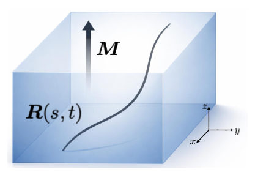
<figcaption class="paper-figure-caption"><b>Fig 1.</b> FIG. 1. Schematic of a dynamical dislocation in a three- dimensional magnetic crystal. Transverse fluctuations of the dislocation line Rµ(s, t) define dislon excitations that hy- bridize with magnons propagating around the equilibrium magnetization M.</figcaption>
</figure>
<figure class="paper-figure-card">
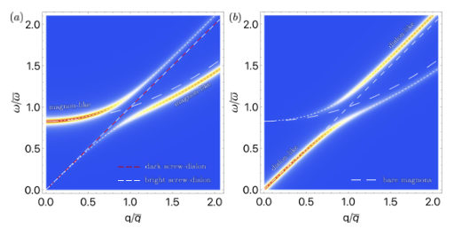
<figcaption class="paper-figure-caption"><b>Fig 2.</b> FIG. 2. Hybridization between magnons and screw-dislons. (a) Magnon and (b) dislon spectral weights. The avoided crossing signals coherent hybridization and spectral-weight transfer. Far from resonance, the hybrid modes recover their magnon- or dislon-like character. The red dashed line in (a) marks the symmetry-protected dark screw-dislon branch, which remains uncoupled to magnons. White dotted and dashed lines denote the hybridized and bare dispersions, re- spectively.</figcaption>
</figure>
<figure class="paper-figure-card">
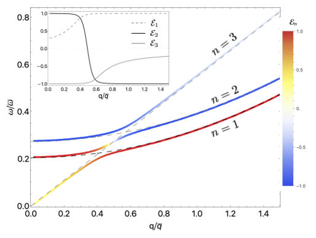
<figcaption class="paper-figure-caption"><b>Fig 3.</b> FIG. 3. Hybrid edge magnon–dislon spectrum, with the branches ωn(qz), colored according to their ellipticity En, for ω0 = 0.8¯ω, J ¯q2 = 0.2¯ω, geff = 0.15¯ω, with geff = p</figcaption>
</figure>
</div>

<p><strong>Summary.</strong> This theoretical paper develops an effective field theory for the interaction between magnons and quantized lattice dislocations in magnetic insulators. By analyzing the coupling strength based on dislocation topology (screw vs. edge), the authors predict distinct, observable signatures like helicity-selective modes or finite spin ellipticity. This highlights topological defects as controllable sources of novel quantum dynamics.</p>
<p><strong>Why it may be interesting.</strong> This work provides a concrete example of how topological defects can introduce novel, geometrically constrained coupling channels into collective excitations (magnons), offering new avenues to control spin dynamics beyond simple bulk interactions.</p>
<details>
<summary>Detailed structure</summary>
<p><strong>Main problem.</strong> The study investigates spin dynamics in ordered magnetic insulators when coupled to topological lattice defects, specifically dislocations (dislons). The goal is to develop a unified theoretical framework describing this magnon-dislon hybridization.</p>
<p><strong>Main result.</strong> The coupling mechanism is highly dependent on the dislocation type: screw dislocations exhibit helicity-selective coupling and dark modes, while edge dislocations generate finite spin-precession ellipticity due to the glide constraint. This establishes defects as sources of observable polarization fingerprints in magnon spectra.</p>
<p><strong>Method.</strong> The authors develop an effective field theory using fracton–elasticity duality, recasting the dynamics into a gauge field framework. They calculate the coupled excitations by integrating out the elastic gauge field to derive a mixed magnon-dislon vertex.</p>
<p><strong>Model / system.</strong> The system is a ferromagnetic crystal containing embedded dislocations. The model uses an effective action $S_{	ext{eff}}$ describing the coupling between spin fluctuations (magnons) and dislocation vibrations (dislons), treated as coupled bosonic excitations.</p>
<p><strong>Key observables.</strong> Magnon–dislon hybridization gap ($\Delta h$), polarization fingerprints, and finite spin-precession ellipticity ($E_n$) for edge dislocations.</p>
<p><strong>Important parameters / regimes.</strong> The coupling strength $g$, the momentum transfer $\kappa$, and the distinction between screw vs. edge dislocation geometries are crucial parameters.</p>
<p><strong>Assumptions / limitations.</strong> Approximations include linear order in small transverse dislon fields, assuming a strict quasi-one-dimensional limit for calculations, and using weak-coupling expansions near resonance.</p>
<p><strong>Figures summary.</strong> Figures illustrate the spectral weights showing avoided crossings for screw dislocations and demonstrate the anisotropic coupling leading to elliptical polarization for edge dislocations.</p>
<p><strong>Paper structure.</strong> The paper builds from deriving the full magnetoelastic action via gauge fields, calculating the propagator components, deriving the mixed vertex by integrating out the elastic field, and finally analyzing the resulting coupled quadratic Hamiltonian for both screw and edge geometries.</p>
</details>
<details>
<summary>Abstract</summary>
<p>Spin dynamics in ordered magnets with topological lattice defects is investigated. Using fracton--elasticity duality, we develop an effective field theory of magnons coupled to quantized lattice dislocations (dislons) in magnetic insulators. Within this framework, an elastic gauge field mediates a nonlocal interaction between dislocations and magnetization gradients. The resulting magnetoelastic coupling gives rise to coherent magnon-dislon hybridization whose properties are dictated by dislocation topology. Screw dislocations exhibit helicity-selective hybridization and symmetry-protected dark dislon sectors, while edge dislocations generate anisotropic hybrid excitations with finite spin-precession ellipticity through the glide constraint. Our results establish dislocations as dynamical topological defects with directly observable polarization fingerprints in magnon spectra, and reveal magnon-dislon hybridization as a new route to control spin dynamics.</p>
</details>
<p><sub><a href="#top">↑ back to top</a></sub></p>

<p><a id="paper-2606.19274"></a></p>
<h3 id="theory-of-nonlinear-spin-transport-in-chiral-conductors"><a href="http://arxiv.org/abs/2606.19274v1">Theory of nonlinear spin transport in chiral conductors</a></h3>
<p><strong>Authors:</strong> Lorenzo Cavicchi, Marco Polini<br>
<strong>Type:</strong> theory · <strong>Category:</strong> other · <strong>PDF:</strong> <a href="https://arxiv.org/pdf/2606.19274v1">https://arxiv.org/pdf/2606.19274v1</a><br>
<strong>Analysis basis:</strong> full PDF text, analyzed in chunks
<strong>Topic relevance:</strong> <code>Keldysh / 2PI / non-Gaussian methods</code> <strong>3/5</strong> · <code>spintronics-quantum-optics interface</code> <strong>3/5</strong> · <code>methods for driven-dissipative</code> <strong>2/5</strong> · <code>non-equilibrium dynamics</code> <strong>2/5</strong> · <code>exotic spin models in light-matter</code> <strong>1/5</strong> · <code>non-equilibrium universality</code> <strong>1/5</strong></p>
<div class="figure-strip-hint">↔ Scroll figures horizontally</div>
<div class="paper-figures-scroll">
<figure class="paper-figure-card">
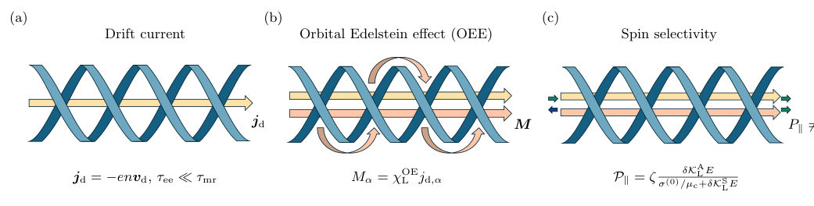
<figcaption class="paper-figure-caption"><b>Fig 1.</b> FIG. 1. (a) Due to fast electron-electron interactions with respect to momentum-relaxing processes (τee ≪τmr), the system reaches a quasi-equilibrium state carrying a finite, time-independent, and spatially homogeneous current jd (yellow arrow). (b) The chiral system develops an orbital magnetization M (orange arrow) due to current flow—i.e. this is the OEE. (c) The coupling between the orbital magnetization and the electron’s spin (small green and blue arrows) produces a finite spin polarization P∥.</figcaption>
</figure>
</div>

<p><strong>Summary.</strong> This paper develops a non-equilibrium theory to explain the Chirality-Induced Spin Selectivity (CISS) effect by connecting it mathematically to the Orbital Edelstein Effect (OEE). The authors show that current flow induces an orbital magnetization ($\mathbf{M}$) in chiral materials, and this $\mathbf{M}$ then generates a measurable spin polarization ($P_{\parallel}$). This establishes CISS as a direct consequence of the material's inherent chiro-optical response.</p>
<p><strong>Why it may be interesting.</strong> This work is highly relevant as it connects fundamental concepts from spintronics (CISS) with linear response phenomena (OEE), providing a theoretical mechanism for generating spin polarization without relying on traditional magnetic materials, which has implications for quantum transport modeling.</p>
<details>
<summary>Detailed structure</summary>
<p><strong>Main problem.</strong> The primary goal is to provide a microscopic theoretical explanation for the Chirality-Induced Spin Selectivity (CISS) effect by establishing a link between CISS and the Orbital Edelstein Effect (OEE).</p>
<p><strong>Main result.</strong> The theory successfully demonstrates that the current-induced orbital magnetization ($\mathbf{M}$) generates an effective Zeeman splitting, which in turn causes a finite spin polarization ($P_{\parallel}$), thereby linking CISS to intrinsic chiro-optical properties like natural optical activity.</p>
<p><strong>Method.</strong> The authors employ a non-equilibrium transport theory framework, utilizing a quasi-equilibrium assumption and analyzing the system's response via small-drift expansions of the spin-resolved distribution function.</p>
<p><strong>Model / system.</strong> The study focuses on chiral electronic systems (conductors) subjected to an external electric field ($\mathbf{E}$), modeling the transport using concepts derived from the Orbital Edelstein Effect and incorporating chirality parameters ($\zeta$).</p>
<p><strong>Key observables.</strong> Finite spin polarization ($P_{\parallel}$), orbital magnetization ($\mathbf{M}$), and the resulting non-linear, spin-polarized current components.</p>
<p><strong>Important parameters / regimes.</strong> The theory is sensitive to the ratio of scattering times ($ au_{ee} \ll     au_{mr}$) and depends on chirality ($\zeta$).</p>
<p><strong>Assumptions / limitations.</strong> Key assumptions include reaching a quasi-equilibrium state under a finite drift current density, using the local/static limit for OEE calculations, and employing small-drift expansions.</p>
<p><strong>Figures summary.</strong> Figure 1 illustrates the three sequential physical steps: (a) generation of the drift current ($\mathbf{j}_d$); (b) induction of orbital magnetization ($\mathbf{M}$) via OEE; and (c) coupling between $\mathbf{M}$ and spin leading to $P_{\parallel}$.</p>
<p><strong>Paper structure.</strong> The paper builds logically by first introducing the CISS effect, then proposing the theoretical bridge through the OEE, deriving the necessary non-equilibrium transport equations, and finally calculating the resulting spin polarization in terms of system chirality.</p>
</details>
<details>
<summary>Abstract</summary>
<p>The chirality-induced spin selectivity (CISS) effect, discovered by Naaman and collaborators in 1999, describes the emergence of a finite spin polarization in response to current flow through a chiral electronic system. While extensive experimental studies have verified the presence of CISS in molecular systems and, more recently, in chiral materials, a complete microscopic understanding of this effect remains elusive. In this work, we propose a theoretical framework linking the CISS effect to the orbital Edelstein effect. In the latter, a drive current induces a finite orbital magnetization, even in the absence of spin-orbit coupling. Our non-equilibrium theory naturally explains key features of the CISS effect: its persistence in systems with weak or vanishingly small spin-orbit coupling and its connection to natural optical activity, a distinctive signature of chiral systems.</p>
</details>
<p><sub><a href="#top">↑ back to top</a></sub></p>

<p><a id="paper-2606.19237"></a></p>
<h3 id="supratransmission-in-lattices-with-purely-nonlinear-coupling"><a href="http://arxiv.org/abs/2606.19237v1">Supratransmission in Lattices with Purely Nonlinear Coupling</a></h3>
<p><strong>Authors:</strong> Defri Ahmad, Tae-Yeon Kim, Andreas Schiffer, Jinkyu Yang, Hadi Susanto<br>
<strong>Type:</strong> theory · <strong>Category:</strong> other · <strong>PDF:</strong> <a href="https://arxiv.org/pdf/2606.19237v1">https://arxiv.org/pdf/2606.19237v1</a><br>
<strong>Analysis basis:</strong> full PDF text, analyzed in chunks
<strong>Topic relevance:</strong> <code>non-equilibrium dynamics</code> <strong>3/5</strong> · <code>Frenkel-Kontorova</code> <strong>2/5</strong> · <code>driven-dissipative phase transition</code> <strong>1/5</strong> · <code>methods for driven-dissipative</code> <strong>1/5</strong> · <code>non-equilibrium universality</code> <strong>1/5</strong></p>
<div class="figure-strip-hint">↔ Scroll figures horizontally</div>
<div class="paper-figures-scroll">
<figure class="paper-figure-card">
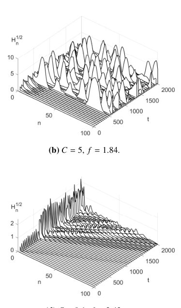
<figcaption class="paper-figure-caption"><b>Fig 1.</b> Fig. 1. Spatiotemporal evolution of √퐻푛for the discrete sine–Gordon model (1.8) with 푝= 1 and 휔= 0.9. Panels (a,c): subthreshold forcing yields an evanescent response confined near the driven boundary. Panels (b,d): slightly above threshold, the boundary excitation generates a propagating wavefront, indicating supratransmission. For weak coupling (퐶= 0.1), the transmitted energy is significantly reduced due to discreteness-induced trapping.</figcaption>
</figure>
<figure class="paper-figure-card">
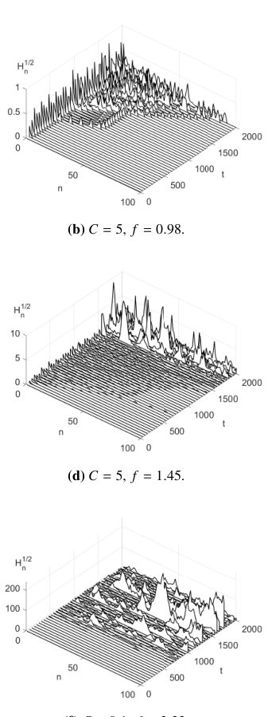
<figcaption class="paper-figure-caption"><b>Fig 2.</b> Fig. 2. Same setting as Fig. 1, but for nonlinear coupling with 푝= 3. Below threshold (a,c,e), the response remains evanescent. Panels (b,c) show intermittent leakage due to weak instabilities of the evanescent state, but not sustained transmission. Above threshold (d,f), pronounced energy propagation occurs, with stronger and more irregular wavefronts than in the linear case (푝= 1).</figcaption>
</figure>
<figure class="paper-figure-card">
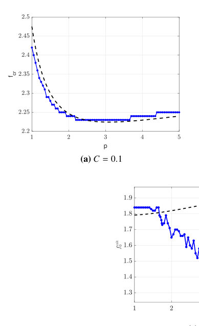
<figcaption class="paper-figure-caption"><b>Fig 3.</b> Fig. 3. Critical driving amplitude 푓cr versus coupling exponent 푝for 휔= 0.9 and three values of 퐶. Solid curves: thresholds obtained from the full model (1.8). Dashed curves: predictions of the DpS approximation (3.3). For small and intermediate coupling, the DpS model reproduces the numerical trends; for strong coupling (퐶= 5), it fails to capture the non-monotone dependence in the strong-coupling regime of the full model.</figcaption>
</figure>
<figure class="paper-figure-card">
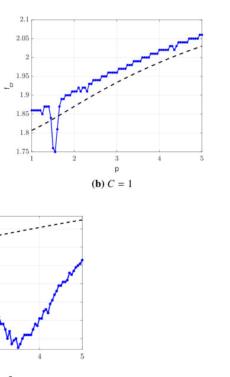
<figcaption class="paper-figure-caption"><b>Fig 4.</b> Figure 3 summarizes the dependence of the threshold amplitude 푓cr on the exponent 푝for weak, intermediate, and strong coupling. These trends indicate that the interplay between 퐶and 푝is nontrivial, and that the transmission threshold is sensitive to both the interaction strength and the nonlinear coupling law. While the overall trends appear qualitatively similar across coupling regimes, the underlying mechanisms differ, as discussed below. For 퐶= 0.1, Fig. 3a, the threshold decreases with increasing 푝, reaches a shallow minimum near 푝≈3, and then rises. At 퐶= 1 (Fig. 3b), the dependence becomes nearly linear, with small irregularities for 1 &lt; 푝&lt; 2. For 퐶= 5 (Fig. 3c), the behavior is...</figcaption>
</figure>
<figure class="paper-figure-card">
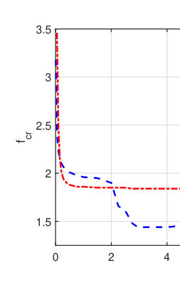
<figcaption class="paper-figure-caption"><b>Fig 5.</b> Fig. 4. Critical driving amplitude as a function of coupling strength 퐶for 푝= 1 and 푝= 3. In both cases, 푓cr saturates as 퐶→∞. For 푝= 1, the limiting threshold is in agreement with the strong-coupling prediction of the DpS model (6.11). For 푝= 3, it is slightly lower, reflecting the destabilizing effect of nonlinear coupling.</figcaption>
</figure>
</div>

<p><strong>Summary.</strong> This paper analyzes supratransmission in lattices where coupling is purely nonlinear, meaning no standard linear pass band exists. Using asymptotic methods, the authors derive a discrete p-Schrödinger equation to model energy transport. They find that while weak coupling suggests thresholding via bifurcations, strong coupling indicates the onset of transmission is governed by spectral instability rather than simple amplitude thresholds.</p>
<p><strong>Why it may be interesting.</strong> The work provides a detailed theoretical framework for energy transport in nonlinear wave systems lacking linear band structures. The distinction between fold-induced vs. instability-induced thresholds is highly relevant to understanding non-integrable, strongly coupled physical media.</p>
<details>
<summary>Detailed structure</summary>
<p><strong>Main problem.</strong> The study investigates supratransmission—energy transport outside the linear pass band—in nonlinear lattices where coupling is purely nonlinear, meaning no underlying linear spectrum exists.</p>
<p><strong>Main result.</strong> The authors establish that supratransmission occurs in these fully nonlinear systems, identifying that the mechanism shifts between fold bifurcations (weak coupling) and instability of the lower stationary branch (strong coupling).</p>
<p><strong>Method.</strong> The analysis employs asymptotic reduction to derive a discrete p-Schrödinger (DpS) equation, supplemented by perturbation theory for analytical approximations and numerical continuation/stability analysis.</p>
<p><strong>Model / system.</strong> The model is based on nonlinear lattices governed by power-law interaction potentials, leading to equations like the discrete sine-Gordon model. The coupling is purely nonlinear ($\varphi(x)$), contrasting with systems possessing linear spectral components.</p>
<p><strong>Key observables.</strong> Supratransmission (energy propagation at frequencies outside the linear pass band), critical driving amplitude ($\mathcal{F}_{crit}$ or $   ilde{a}_{cr}$), and stability eigenvalues ($\lambda$).</p>
<p><strong>Important parameters / regimes.</strong> Nonlinearity exponent ($p$ or $
ho$), coupling strength ($C$ or $C_b$), driving frequency ($\omega$), and the approximation regime (weak vs. strong coupling).</p>
<p><strong>Assumptions / limitations.</strong> The primary approximations involve deriving the DpS equation for weak/intermediate coupling, which is noted to fail in the strong-coupling limit where instability mechanisms dominate.</p>
<p><strong>Figures summary.</strong> Figures illustrate spatiotemporal evolution comparing linear ($
ho=1$) and nonlinear ($
ho=3$) couplings below and above threshold. Other figures compare numerically computed critical amplitudes against asymptotic predictions based on different coupling strengths.</p>
<p><strong>Paper structure.</strong> The paper progresses by first establishing the model (nonlinear lattices), deriving approximations like the DpS equation, analyzing supratransmission thresholds using bifurcation theory (weak coupling), and finally contrasting these results with numerical findings in the strong-coupling regime where instability is suggested as the true mechanism.</p>
</details>
<details>
<summary>Abstract</summary>
<p>Supratransmission is examined in nonlinear lattices with purely nonlinear coupling, extending the phenomenon to systems that lack a linear pass band. In contrast to standard lattices with mixed linear-nonlinear interactions, the present model has no linear spectrum, so energy propagation arises entirely from nonlinear effects. Asymptotic analysis yields a discrete $p$-Schrödinger (DpS) equation that {provides an accurate description in the weak- and intermediate-coupling regimes and offers qualitative insight in the strong-coupling regime}. Perturbation provides analytical approximations for the critical driving amplitude, explicitly showing its dependence on the driving frequency, coupling strength, and the nonlinearity exponent $p$. The analysis identifies a non-trivial dependence of the critical amplitude on $p$, with distinct trends in different coupling regimes. Numerical continuation and direct simulations {validate the theory in regimes where the asymptotic reduction is applicable and show good agreement across a wide range of parameters}. The results establish supratransmission in fully nonlinear lattices and clarify the associated energy-transport mechanisms, with relevance to mechanical lattices, tunable metamaterials, and nonlinear optical arrays.</p>
</details>
<p><sub><a href="#top">↑ back to top</a></sub></p>

<p><a id="paper-2606.18891"></a></p>
<h3 id="theory-of-in-plane-orbital-magnetization-with-layer-hybridization"><a href="http://arxiv.org/abs/2606.18891v1">Theory of In-Plane Orbital Magnetization with Layer Hybridization</a></h3>
<p><strong>Authors:</strong> Jin-Xin Hu, Zi-Ting Sun, Yugui Yao<br>
<strong>Type:</strong> theory · <strong>Category:</strong> other · <strong>PDF:</strong> <a href="https://arxiv.org/pdf/2606.18891v1">https://arxiv.org/pdf/2606.18891v1</a><br>
<strong>Analysis basis:</strong> full PDF text, analyzed in chunks
<strong>Topic relevance:</strong> <code>exotic spin models in light-matter</code> <strong>3/5</strong> · <code>spintronics-quantum-optics interface</code> <strong>3/5</strong> · <code>Keldysh / 2PI / non-Gaussian methods</code> <strong>1/5</strong></p>
<div class="figure-strip-hint">↔ Scroll figures horizontally</div>
<div class="paper-figures-scroll">
<figure class="paper-figure-card">
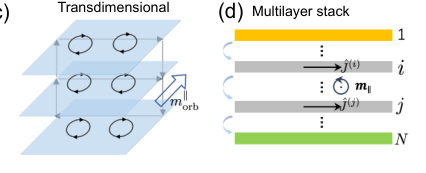
<figcaption class="paper-figure-caption"><b>Fig 1.</b> FIG. 1. Dimensional crossover of orbital magnetic moments in layered systems. (a) In an ideal two-dimensional system, Bloch electrons carry only an out-of-plane orbital magnetic moment mz orb. (b) In a three-dimensional crystal, both mz orb and an in-plane component m∥ orb can occur. (c) In the trans- dimensional regime, m∥ orb is generated by coherent interlayer orbital motion associated with circulating interlayer currents. (d) In a layer-hybridized multilayer stack, the current loop formed between the i-th and j-th layers contributes to the in-plane orbital magnetic moment.</figcaption>
</figure>
<figure class="paper-figure-card">
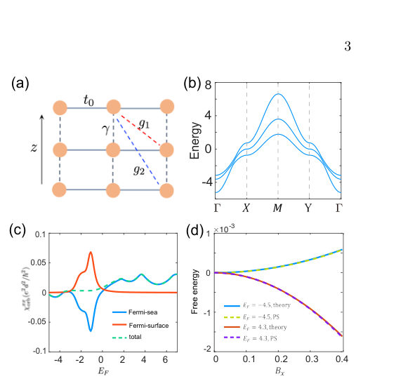
<figcaption class="paper-figure-caption"><b>Fig 2.</b> FIG. 2. Model validation of the in-plane orbital magnetic susceptibility. (a) Three-layer square-lattice model with in- tralayer hopping t0 and interlayer hoppings γ, g1, and g2. (b) Band structure for the model used in the numerical calcula- tions. (c) In-plane orbital susceptibility χxx orb as a function of Fermi energy EF , decomposed into Fermi-surface, Fermi- sea, and total contributions. (d) Field-dependent free-energy shift under an in-plane magnetic field Bx. Dashed curves are obtained from the full Peierls-substitution calculation, while solid curves show −1</figcaption>
</figure>
<figure class="paper-figure-card">
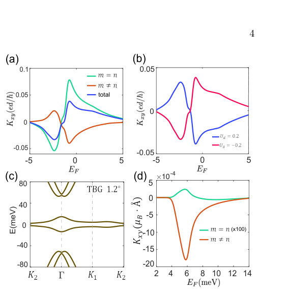
<figcaption class="paper-figure-caption"><b>Fig 3.</b> FIG. 3. In-plane orbital magnetoelectric response. (a) Kinetic magnetoelectric coefficient Kxy as a function of Fermi energy EF , resolved into intraband (m = n), interband (m ̸= n), and total contributions. (b) Gate-controlled switching of Kxy under opposite displacement fields Ud = ±0.2. (c) Represen- tative moire miniband structure of twisted bilayer graphene at twist angle 1.2◦. (d) Calculated Kxy in the twisted-bilayer- graphene model, showing the relative intraband and inter- band contributions.</figcaption>
</figure>
</div>

<p><strong>Summary.</strong> This paper develops a comprehensive theory for calculating the in-plane orbital magnetization and susceptibility in layered quantum materials. It addresses the unique 'transdimensional' regime where interlayer coupling is crucial, leading to an orbital response absent in simpler 2D or bulk models. The key prediction is the realization of a gate-tunable in-plane magnetoelectric effect.</p>
<p><strong>Why it may be interesting.</strong> This work is highly relevant as it extends fundamental concepts of orbital magnetism into complex low-dimensional heterostructures, providing theoretical tools for designing novel 'orbitronic' devices.</p>
<details>
<summary>Detailed structure</summary>
<p><strong>Main problem.</strong> The paper develops a theory for calculating the in-plane orbital magnetization ($\mathbf{M}_{\parallel}^{	ext{orb}}$) and susceptibility ($\chi^{ab}_{	ext{orb}}$) in multilayer quantum systems subjected to an in-plane magnetic field.</p>
<p><strong>Main result.</strong> A systematic framework is established that predicts a gate-tunable in-plane orbital magnetoelectric effect in layered materials, which is distinct from conventional 3D or ideal 2D responses.</p>
<p><strong>Method.</strong> The theory uses the current-loop picture to construct the in-plane orbital angular momentum operator and derives expressions for magnetization and susceptibility using modern theory concepts like Berry curvature contributions.</p>
<p><strong>Model / system.</strong> The study focuses on layered materials, including few-layer graphene and moiré heterostructures, modeled by $N$-layer square-lattice Hamiltonians with interlayer hopping terms. The analysis covers the 'transdimensional' regime where layer thickness is comparable to the vertical mean free path.</p>
<p><strong>Key observables.</strong> In-plane orbital magnetic moment ($\hat{\mathbf{m}}_{\parallel}$), in-plane orbital magnetization ($\mathbf{M}_{	ext{orb}}^{\parallel}$), and in-plane orbital magnetic susceptibility ($\chi_{ab}^{	ext{orb}}$).</p>
<p><strong>Important parameters / regimes.</strong> Layer thickness ($d$), interlayer hopping parameters ($\gamma, g_1, g_2$), external gate electric field ($U_d$), and the ratio of layer thickness to mean free path ($d/l_z$).</p>
<p><strong>Assumptions / limitations.</strong> The theory is most applicable in the transdimensional regime where coherent interlayer tunneling survives; some calculations use continuum limit approximations for specific systems like TBG.</p>
<p><strong>Figures summary.</strong> Figures illustrate the dimensional crossover of orbital moments across 2D, 3D, and transdimensional regimes. Other figures show model validation of $\chi^{xx}_{	ext{orb}}$ vs $E_F$ and demonstrate gate control over the in-plane magnetoelectric response ($K_{xy}$).</p>
<p><strong>Paper structure.</strong> The paper develops the theory by first constructing the in-plane orbital magnetic moment operator from a current-loop picture. It then derives exact expressions for magnetization and susceptibility, applying these to predict phenomena like the magnetoelectric effect and magnetoresistance in specific layered models.</p>
</details>
<details>
<summary>Abstract</summary>
<p>The modern theory of orbital magnetization successfully describes the response of Bloch electrons to magnetic fields in fully periodic crystals, but it does not directly address the distinct regime of an in-plane field in multilayer systems with layer hybridization. Coherent interlayer tunneling allows electrons to form circulating current loops, producing an in-plane orbital response that is absent in a strictly two-dimensional limit and qualitatively different from the conventional three-dimensional one. Here we develop a theory of in-plane orbital magnetization for this {\it transdimensional} regime, where the layer thickness is comparable to the vertical mean free path. Starting from the current-loop picture, we construct the in-plane orbital angular momentum operator and derive exact expressions for the orbital magnetic moment and the in-plane orbital magnetic susceptibility. As an application, we predict a gate-tunable in-plane orbital magnetoelectric effect in layered materials. Our framework establishes a general foundation for in-plane orbital responses and suggests new opportunities for orbitronics in layer-hybridized quantum materials.</p>
</details>
<p><sub><a href="#top">↑ back to top</a></sub></p>

<p><a id="paper-2606.19187"></a></p>
<h3 id="constriction-induced-modulation-of-charging-energy-in-a-quantum-hall-cavity"><a href="http://arxiv.org/abs/2606.19187v1">Constriction-induced modulation of charging energy in a quantum Hall cavity</a></h3>
<p><strong>Authors:</strong> Emily Hajigeorgiou, Arup Kumar Paul, Mario Di Luca, Vladimir Umansky, Moty Heiblum, Mitali Banerjee<br>
<strong>Type:</strong> experiment · <strong>Category:</strong> other · <strong>PDF:</strong> <a href="https://arxiv.org/pdf/2606.19187v1">https://arxiv.org/pdf/2606.19187v1</a><br>
<strong>Analysis basis:</strong> full PDF text, analyzed in chunks
<strong>Topic relevance:</strong> <code>correlated cavity matter</code> <strong>3/5</strong> · <code>driven-dissipative phase transition</code> <strong>1/5</strong> · <code>interference shaping light</code> <strong>1/5</strong></p>
<div class="figure-strip-hint">↔ Scroll figures horizontally</div>
<div class="paper-figures-scroll">
<figure class="paper-figure-card">
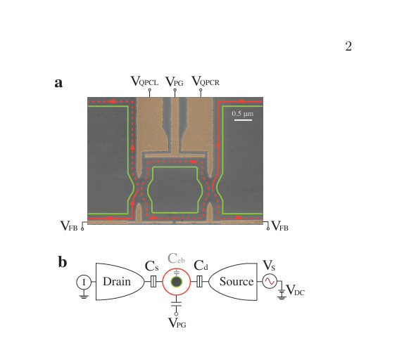
<figcaption class="paper-figure-caption"><b>Fig 1.</b> FIG. 1. Device picture and schematic. a, False-colored SEM image of the 2 × 2 µm2 cavity. The fishbone gates are biased at VFB = −0.6 V, and the left, right QPC, and plunger gate voltages are denoted VQPCL, VQPCR, and VPG. The edge- state structure at ν = 2 is shown: the inner edge is fully reflected (light green), while the outer edge is partially trans- mitted at the QPCs (red). b, Schematic of the cavity and its electrostatic environment. A small AC excitation Vs is applied on top of a DC bias VDC at the source, and the resulting AC current is measured at the drain. The dot is tunnel-coupled to the source and drain via the QPCs, with capacitances CS and CD, and capacitively coupled to...</figcaption>
</figure>
<figure class="paper-figure-card">
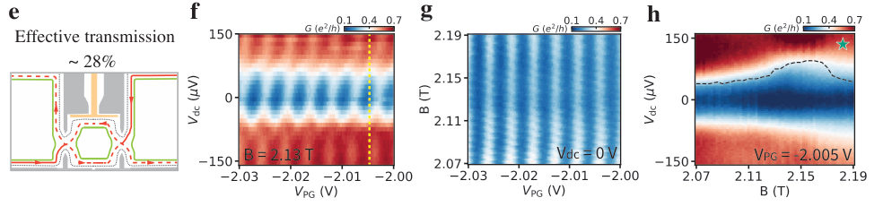
<figcaption class="paper-figure-caption"><b>Fig 2.</b> FIG. 2. a–d, Effective transmission &lt; 10% (QPC setting as in Fig. 3e). e–h, Effective transmission ≈28% (QPC setting as in Fig. 3f). a,e, Device schematics for the two regimes; only the outer edge is partitioned. The plunger gate (VPG) is highlighted in yellow, while all other gates (grey) are fixed. Black dotted lines indicate the confinement potential. b,f, Coulomb diamonds taken at 2.13 T; the yellow dashed line marks the fixed plunger-gate voltage used in d,h. c,g, Evolution of conductance oscillations with magnetic field taken at VDC = 0 V . d,h, Conductance at fixed plunger-gate voltage (yellow dashed line in b,f), showing the evolution of a fixed charge state N with magnetic field...</figcaption>
</figure>
<figure class="paper-figure-card">
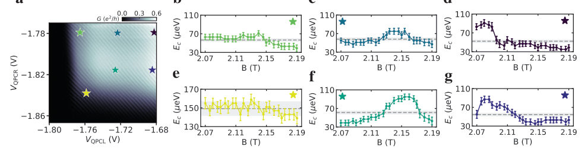
<figcaption class="paper-figure-caption"><b>Fig 3.</b> FIG. 3. a, Conductance map as a function of left and right barrier voltages, with VP G = −2 V. Each colored star corresponds to a trace in the following panels, labeled accordingly. b–g, Charging energy as a function of magnetic field, extracted from VDC(B) obtained from measurements similar to those shown in Fig. 2d,h. The grey dashed line indicates the mean, and the shaded region denotes the ±10% interval.</figcaption>
</figure>
<figure class="paper-figure-card">
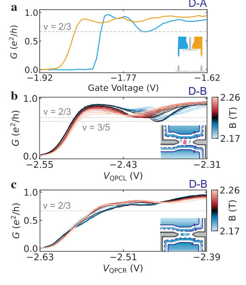
<figcaption class="paper-figure-caption"><b>Fig 4.</b> FIG. 4. a, Conductance through the left (blue) and right (or- ange) QPCs of device A (D-A), measured while the opposite constriction fully transmits the outer edge mode. The left QPC exhibits a clear ν = 2/3 plateau. Data are taken at B = 2.13 T. b, Conductance through the left QPC of de- vice B (D-B) as a function of magnetic field, with the right QPC fully open. A ν = 3/5 feature evolves into a pro- nounced ν = 2/3 plateau with increasing magnetic field. c, Conductance through the right QPC of device B (D-B) as a function of magnetic field, with the left QPC fully open. The inset schematics in b,c illustrate the QPC region in the two regimes: in b, an incompressible fractional quantum...</figcaption>
</figure>
</div>

<p><strong>Summary.</strong> The researchers investigated Coulomb charging effects in a quantum Hall cavity using QPCs. They demonstrated experimentally that the charging energy is not static but varies significantly with the magnetic field when the constrictions are strongly coupled. This modulation proves that the QPC barriers act as dynamic electrostatic elements, providing crucial corrections for interpreting advanced measurements like those seeking evidence of anyons.</p>
<p><strong>Why it may be interesting.</strong> This work directly challenges simplified electrostatic models in mesoscopic quantum systems, showing that interaction effects (via FQH states) dynamically modify fundamental parameters like charging energy, which has implications for interpreting anyonic statistics measurements.</p>
<details>
<summary>Detailed structure</summary>
<p><strong>Main problem.</strong> Interpreting interference signals in quantum Hall interferometers is complicated by Coulomb charging effects, which are often incorrectly treated as static properties.</p>
<p><strong>Main result.</strong> The charging energy in the cavity is strongly and non-monotonically modulated by the magnetic field, varying up to 60% over a small field range.</p>
<p><strong>Method.</strong> Differential conductance measurements were used on gate-defined quantum Hall cavities tuned to the Coulomb-dominated regime. The charging energy was extracted from the voltage bias at the apex of measured Coulomb diamonds.</p>
<p><strong>Model / system.</strong> The system is a quantum Hall cavity fabricated on a GaAs/AlGaAs heterostructure, operating in the fractional quantum Hall regime. Transport is analyzed by tuning Quantum Point Contacts (QPCs) that act as active electrostatic elements controlling coupling to leads.</p>
<p><strong>Key observables.</strong> Charging energy ($E_C$), differential conductance ($ ext{d}I/    ext{d}V_s$), and Coulomb blockade resonances.</p>
<p><strong>Important parameters / regimes.</strong> Magnetic field ($B$) modulation (up to 60% variation over $100 	ext{ mT}$), strong cavity-to-lead coupling regime, and the formation of incompressible fractional quantum Hall states ($
u=2/3$).</p>
<p><strong>Assumptions / limitations.</strong> The analysis assumes that QPC constrictions are active electrostatic elements whose local compressibility dictates the effective capacitance between the cavity and leads.</p>
<p><strong>Figures summary.</strong> Figures illustrate device setups, comparisons between weak and strong coupling regimes showing Coulomb diamonds, and plots detailing $E_C$ vs. $B$, correlating modulation with FQH state formation in QPCs.</p>
<p><strong>Paper structure.</strong> The paper establishes the problem of static charging energy assumptions, presents measurements demonstrating non-monotonic $E_C(B)$ dependence only when coupling is strong, and attributes this to dynamic screening mechanisms governed by local compressibility changes within the constrictions.</p>
</details>
<details>
<summary>Abstract</summary>
<p>Electronic Fabry-Pérot interferometers (FPIs) operating in the fractional quantum Hall regime are a key platform for probing anyonic braiding statistics, yet interpreting their interference signals is complicated by Coulomb charging effects, which are commonly treated as parasitic, static properties governed by the cavity's geometry and electrostatics. Here, using a gate-defined quantum Hall cavity tuned to the Coulomb-dominated regime, we demonstrate that the charging energy is in fact strongly and non-monotonically modulated by the magnetic field, varying by up to 60% over a range of only 100 mT. The effect appears exclusively when the quantum point contacts (QPCs) forming the cavity are weakly pinched off, i.e., in the strong cavity-to-lead coupling regime. By correlating the charging energy modulation with the QPC magneto-conductance, we attribute this behavior to field-dependent changes in local compressibility and electrostatic screening between the cavity and the leads, driven by the formation of incompressible fractional quantum Hall states within the constrictions. This result establishes QPC constrictions of quantum Hall cavities as active electrostatic elements rather than passive boundaries, revealing a dynamic screening mechanism, with direct consequences for the interpretation of interference measurements and the extraction of anyonic statistics.</p>
</details>
<p><sub><a href="#top">↑ back to top</a></sub></p>

<p><a id="paper-2606.18622"></a></p>
<h3 id="on-the-quasi-continuum-approximation-of-some-localized-patterns-in-the-fput-lattice"><a href="http://arxiv.org/abs/2606.18622v1">On the quasi-continuum approximation of some localized patterns in the FPUT lattice</a></h3>
<p><strong>Authors:</strong> Su Yang, Wenrong Sun, Lei Liu, Panayotis G. Kevrekidis<br>
<strong>Type:</strong> theory · <strong>Category:</strong> other · <strong>PDF:</strong> <a href="https://arxiv.org/pdf/2606.18622v1">https://arxiv.org/pdf/2606.18622v1</a><br>
<strong>Analysis basis:</strong> full PDF text, analyzed in chunks
<strong>Topic relevance:</strong> <code>Frenkel-Kontorova</code> <strong>3/5</strong> · <code>non-equilibrium dynamics</code> <strong>1/5</strong></p>
<div class="figure-strip-hint">↔ Scroll figures horizontally</div>
<div class="paper-figures-scroll">
<figure class="paper-figure-card">
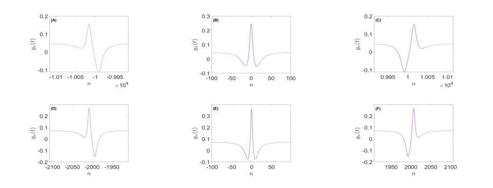
<figcaption class="paper-figure-caption"><b>Fig 1.</b> FIG. 1. Comparison of the second-order rational solutions. The first and second row depict the comparisons associated with ϵ = 0.05, 0.075, respectively. Note that the solid blue curves display the numerical solutions of the FPUT lattice (4), and the dashed red curves showcase the exact solutions specified in Sec. IV. In addition, notice that K2 = 4 and K4 = 1 in all the relevant numerical simulations.</figcaption>
</figure>
<figure class="paper-figure-card">
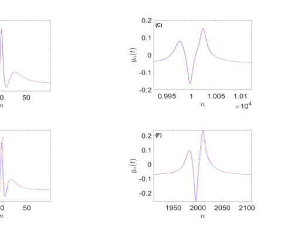
<figcaption class="paper-figure-caption"><b>Fig 2.</b> FIG. 2. Same as in Fig. 1 but now for the comparisons of the third-order rational solutions.</figcaption>
</figure>
<figure class="paper-figure-card">
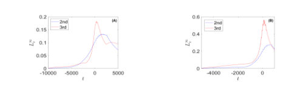
<figcaption class="paper-figure-caption"><b>Fig 3.</b> FIG. 3. The relative L∞ e losses for the 2nd and 3rd-order rational solutions. Panels (A) and (B) refer to the losses computed for the cases of ϵ = 0.05 and 0.075, respectively.</figcaption>
</figure>
<figure class="paper-figure-card">
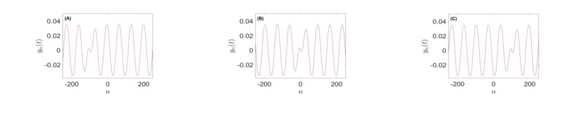
<figcaption class="paper-figure-caption"><b>Fig 4.</b> FIG. 4. The comparison of the dark breather solution on the snoidal background. Panels (A), (B), (C) depict the comparisons made at t = −100, 0, 100, respectively, where ϵ = 0.05, k = 0.7, and K2 = −K4 = 1. Finally, note that the solid blue and dashed red curves refer to the numerical solutions of the FPUT lattice (4) and the associated analytical solutions specified in Eq. (21).</figcaption>
</figure>
<figure class="paper-figure-card">
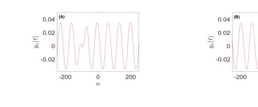
<figcaption class="paper-figure-caption"><b>Fig 5.</b> Fig. 6 depicts the relevant comparisons of the localized al- gebraically decaying soliton on the dnoidal wave background. Similar to the comparisons of the dark breather structure in Subsection V A, the soliton structure of the numerical dynam- ics of the FPUT lattice fits very well with the analytical so- lutions and appears to be naturally propagating through the</figcaption>
</figure>
</div>

<p><strong>Summary.</strong> This paper investigates localized wave phenomena on the FPUT lattice by employing a quasi-continuum approximation derived from the modified KdV equation. By using exact solutions of the mKdV equation to initialize the discrete lattice, the authors demonstrate that this reduction accurately models various structures like solitons and rogue waves across different background states. This methodology provides a powerful tool for studying wave dynamics in nonlinear lattices.</p>
<p><strong>Why it may be interesting.</strong> This work bridges the gap between continuum integrable models (like mKdV) and discrete physical systems (FPUT lattice), a common theme in nonlinear physics relevant to understanding wave propagation in structured materials.</p>
<details>
<summary>Detailed structure</summary>
<p><strong>Main problem.</strong> The work analyzes localized wave patterns, such as rogue waves, solitons, and breathers, that can exist within the dynamics of the FPUT lattice.</p>
<p><strong>Main result.</strong> The study successfully demonstrates that exact solutions derived from the modified KdV equation can be used to construct initial conditions for the FPUT lattice, showing good quantitative agreement between numerical simulations and analytical predictions.</p>
<p><strong>Method.</strong> A quasi-continuum approximation is employed by deriving a reduced integrable equation (mKdV) from the discrete FPUT lattice model. The exact solutions of this continuum equation are then mapped back to initialize and validate time evolution on the discrete lattice.</p>
<p><strong>Model / system.</strong> The primary system is the Fermi–Pasta–Ulam–Tsingou (FPUT) lattice, governed by a nonlinear chain interaction potential. This discrete model is approximated by the continuous modified Korteweg-de Vries (mKdV) equation under specific assumptions ($K_3=0$).</p>
<p><strong>Key observables.</strong> Rogue-wave profiles, solitons, breathers, and the relative $L_\infty$ error ($\epsilon(t)$) quantifying the agreement between numerical FPUT dynamics and analytical mKdV solutions.</p>
<p><strong>Important parameters / regimes.</strong> The smallness parameter $\epsilon \ll 1$, which governs the validity of the multi-scale expansion; and elliptic moduli ($k$) used to define various background wave states (snoidal, dnoidal, cnoidal).</p>
<p><strong>Assumptions / limitations.</strong> The analysis assumes $K_3=0$ ($eta$-FPUT model) for the reduction to mKdV, and relies on formal smallness parameters $\epsilon \ll 1$ for the continuum approximation.</p>
<p><strong>Figures summary.</strong> Figures compare numerical FPUT dynamics initialized via the method against analytical second-order rational solutions; other figures plot the relative $L_\infty$ error across different solution orders and background types (e.g., dark breathers on snoidal backgrounds).</p>
<p><strong>Paper structure.</strong> The paper proceeds by deriving the mKdV reduction from the FPUT lattice, then utilizing exact mKdV solutions to set initial conditions for the discrete system. It systematically tests this approach by examining localized waves—solitons, breathers, and rogue waves—on various background states (homogeneous, snoidal, dnoidal, cnoidal).</p>
</details>
<details>
<summary>Abstract</summary>
<p>In the present work, we present a number of localized wave patterns that are theoretically analyzed and   numerically illustrated to be observable within the   widely applicable paradigm of the FPUT lattice. In particular, we derive a modified KdV equation from the FPUT lattice, which admits a variety of localized waves including these exact rational solutions representing rogue-wave profiles, solitons and breathers on the top of not only homogeneous,   but also periodic elliptic function traveling-wave background. We utilize these exact solutions of the modified KdV reduction to construct consistent initial conditions for the FPUT lattice and perform time stepping of the latter. Relevant comparisons between these numerical solutions of the FPUT lattice and their associated analytical counterparts have been conducted to demonstrate good performance of the derived modified KdV reduction in approximating distinct localized wave structures from the FPUT lattice.   This approach paves the way for importing a number of   quasi-continuum waveforms to the FPUT lattice and the   potential associated physical experiments, including recent   ones in mechanical metamaterials.</p>
</details>
<p><sub><a href="#top">↑ back to top</a></sub></p>

<p><a id="paper-2606.18346"></a></p>
<h3 id="quantum-geometry-and-topology-of-bulk-plasmons-in-weyl-metals"><a href="http://arxiv.org/abs/2606.18346v1">Quantum Geometry and Topology of Bulk Plasmons in Weyl Metals</a></h3>
<p><strong>Authors:</strong> Hong-Yi Xie, Peter Abbamonte, Bruno Uchoa<br>
<strong>Type:</strong> theory · <strong>Category:</strong> other · <strong>PDF:</strong> <a href="https://arxiv.org/pdf/2606.18346v1">https://arxiv.org/pdf/2606.18346v1</a><br>
<strong>Analysis basis:</strong> full PDF text, analyzed in chunks
<strong>Topic relevance:</strong> <code>interference shaping light</code> <strong>3/5</strong> · <code>Keldysh / 2PI / non-Gaussian methods</code> <strong>1/5</strong></p>
<div class="figure-strip-hint">↔ Scroll figures horizontally</div>
<div class="paper-figures-scroll">
<figure class="paper-figure-card">
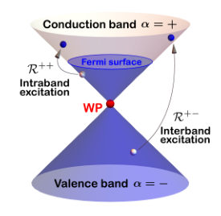
<figcaption class="paper-figure-caption"><b>Fig 1.</b> FIG. 1. Energy bands near a Weyl point (WP) enclosed by a Fermi surface. Plasmon processes involve both intraband and interband particle-hole transitions, which contribute to the plasmon envelope function Rαβ q (Q). The interband com- ponent R+−(R−+) has monopole structure and has a finite vorticity in the relative momentum coordinates q.</figcaption>
</figure>
<figure class="paper-figure-card">
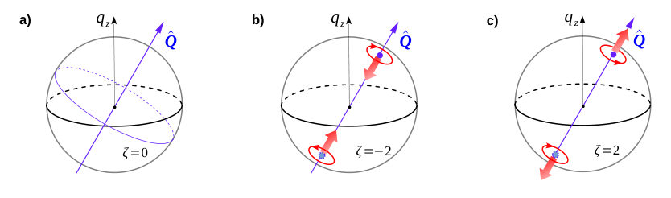
<figcaption class="paper-figure-caption"><b>Fig 2.</b> FIG. 2. Illustration of the topological structure of the envelope functions Rαβ q (Q →0). The sphere (gray line) is defined by the polar and azimuthal angles of the relative momentum q. The equator is the branch cut of the qc ̸= 0 MSH. The COM momentum axis ˆQ is depicted by the blue arrow. a) Intraband components Rαα q (α = ±) exhibit a nodal plane (blue circle) orthogonal to the ˆQ axis, with no vortex present (ζ = 0). b) Interband component R+− q exhibits a nodal line along the ˆQ axis with total vorticity ζ = −2. Two vortices with vorticity −1 (red arrows) form around the ˆQ axis. c) The interband component R−+ q exhibits a nodal line along the ˆQ axis, with two vortices with vorticity...</figcaption>
</figure>
</div>

<p><strong>Summary.</strong> This theoretical work investigates how the topology inherent in Weyl metals dictates the nature of their collective plasmon excitations. It proves that these plasmons carry a topological charge quantified by vorticity ($\zeta$), which manifests as unique optical selection rules, allowing them to interact preferentially with light polarized along specific directions.</p>
<p><strong>Why it may be interesting.</strong> The connection between topological invariants (Chern number) and measurable optical properties (polarization selection rules, SHG) is highly relevant for quantum optics and condensed matter theory.</p>
<details>
<summary>Detailed structure</summary>
<p><strong>Main problem.</strong> The study addresses the quantum geometric structure and topological properties of plasmons—collective excitations—within Weyl metals.</p>
<p><strong>Main result.</strong> Weyl metal plasmons are shown to possess a monopole structure and finite vorticity ($\zeta = 2C_W$), leading to unique optical selection rules where they couple selectively to light polarized along the dipole moment $\mathbf{d}$.</p>
<p><strong>Method.</strong> The analysis employs linear response theory (RPA) applied to the electron-hole pair operators, utilizing concepts from Berry curvature and quantum geometry tensors.</p>
<p><strong>Model / system.</strong> The system is Weyl metals, modeled by a Hamiltonian describing fermionic spinors. The physics is analyzed through the plasmon polarization bubble $\Pi_R(Q, \omega)$ and its susceptibility tensor $\chi_{ij}(\omega)$.</p>
<p><strong>Key observables.</strong> Plasmon dispersion ($\omega_Q$), vorticity ($\zeta$), effective dipole moment ($\mathbf{d}$), and optical selection rules for light coupling.</p>
<p><strong>Important parameters / regimes.</strong> Fermi momentum ($k_F$), plasmon frequency ($\omega_0$), and the topological charge (Chern number $C_W$).</p>
<p><strong>Assumptions / limitations.</strong> The analysis relies on the Random Phase Approximation (RPA) level for plasmon calculation, assuming weak light fields and zero temperature in some derivations.</p>
<p><strong>Figures summary.</strong> Figures illustrate the monopole structure of interband components, showing nodal planes ($\zeta=0$) and vortex structures ($\zeta=\pm 2$) related to different plasmon components.</p>
<p><strong>Paper structure.</strong> The paper progresses from defining the quantum geometric framework using form factor matrices to calculating the polarization function $\Pi_R$ via integrals. It then analyzes the resulting susceptibility tensor $\chi_{ij}(\omega)$ to derive unique optical selection rules and predict phenomena like Second Harmonic Generation (SHG).</p>
</details>
<details>
<summary>Abstract</summary>
<p>We address the quantum geometric structure of plasmons in Fermi surfaces enclosing a topological charge. We demonstrate that Weyl fermion plasmons have monopole structure, are topological and have a finite vorticity $ζ=2\mathsf{C}_{\text{w}}$, where $\mathsf{C}_{\text{w}}$ is the Chern number of the Fermi surface enclosing the Weyl point. We show that these plasmons selectively couple to light linearly polarized along the plasmon effective dipole moment $\mathbf{d}$, which has quantum geometric origin and points along the direction of the plasmon center of mass momentum $\hat{\mathbf{Q}}$. We suggest that Weyl metal topological plasmons have distinctive optical properties compared to conventional plasmons.</p>
</details>
<p><sub><a href="#top">↑ back to top</a></sub></p>

<p><a id="paper-2606.18964"></a></p>
<h3 id="projected-altermagnetism-by-symmetry-reduction-at-surfaces-and-in-thin-films"><a href="http://arxiv.org/abs/2606.18964v1">Projected altermagnetism by symmetry reduction at surfaces and in thin films</a></h3>
<p><strong>Authors:</strong> Sopheak Sorn, Charanpreet Singh, Lukasz Plucinski, Gustav Bihlmayer, Yuriy Mokrousov, Wulf Wulfhekel<br>
<strong>Type:</strong> theory · <strong>Category:</strong> other · <strong>PDF:</strong> <a href="https://arxiv.org/pdf/2606.18964v1">https://arxiv.org/pdf/2606.18964v1</a><br>
<strong>Analysis basis:</strong> full PDF text, analyzed in chunks
<strong>Topic relevance:</strong> <code>spintronics-quantum-optics interface</code> <strong>3/5</strong></p>
<div class="figure-strip-hint">↔ Scroll figures horizontally</div>
<div class="paper-figures-scroll">
<figure class="paper-figure-card">
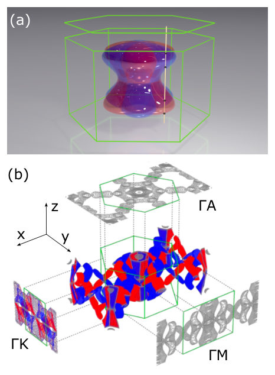
<figcaption class="paper-figure-caption"><b>Fig 1.</b> FIG. 1. Illustration of bulk states projecting onto surface BZ in g-wave AM CrSb. (a) Schematic representation of the bulk states at the Fermi level and their Sz spin polar- ization (blue/red) projecting onto the (001) surface BZ (top- most green hexagon) along the direction of the orange line. Blue and red bulk states project onto the same points, lead- ing to spin-degenerate states throughout the surface BZ. (b) Projections of bulk states as computed from DFT onto three surfaces indicate a rich variety of outcomes. ΓA and ΓM pro- jections yield spin-degenerate outcomes (colorless), while ΓK projection strikingly leads to a d-wave spin splitting.</figcaption>
</figure>
<figure class="paper-figure-card">
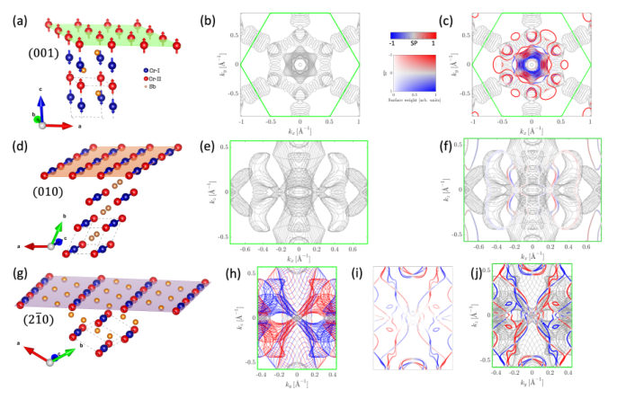
<figcaption class="paper-figure-caption"><b>Fig 2.</b> FIG. 2. Crystal structure (a,d,g) of CrSb thin slabs of (001), (010), and (210) orientation, respectively. (b, e, h) display the color-coded z-spin polarization of the projected bulk states at the Fermi level onto the BZ of the slabs highlighting its absence for the (001) and (010) orientation, and its d-wave symmetry for the (210) orientation. To single out surface states, we contrast them with results from the slab calculations shown in (c, f, j), through which the surface states are clearly seen as the additional lines on top of the bulk states. They exhibit pronounced z-spin polarization as reflected in their strong color intensity that overshadows the gray bulk states. Particularly for...</figcaption>
</figure>
</div>

<p><strong>Summary.</strong> This work explores how cutting a bulk altermagnetic material into thin films or exposing its surfaces fundamentally changes its magnetic electronic structure. By applying group theory and advanced calculations, the authors show that surface orientation dictates whether the spin splitting is conventional, ferromagnetic-like, or possesses a desirable d-wave symmetry. This demonstrates that surface engineering offers a powerful route to tune quantum magnetic properties.</p>
<p><strong>Why it may be interesting.</strong> While focused on condensed matter magnetism, the concept of controlling electronic properties via boundary conditions (surfaces) by exploiting symmetry breaking is highly relevant to designing quantum materials for spintronics and topological phenomena.</p>
<details>
<summary>Detailed structure</summary>
<p><strong>Main problem.</strong> The study investigates how breaking crystal symmetries at surfaces and in thin films fundamentally alters the electronic structure and spin-splitting patterns of bulk altermagnetic materials.</p>
<p><strong>Main result.</strong> Symmetry reduction dictates that while some surfaces yield conventional antiferromagnetic behavior, specific orientations (like (210)) can stabilize desirable d-wave spin splitting, suggesting surface engineering is a tunable platform for controlling magnetism.</p>
<p><strong>Method.</strong> The research combines group-theoretical analysis of symmetry constraints with first-principles electronic structure calculations (DFT/Tight-Binding) to model the projected band structures.</p>
<p><strong>Model / system.</strong> The system under study is altermagnetic materials, exemplified by CrSb. The theoretical framework analyzes the spin splitting term in the Bloch Hamiltonian based on the material's magnetic octupole moment and the symmetry of the terminating surface plane.</p>
<p><strong>Key observables.</strong> Spin-split electronic states (momentum-dependent), the symmetry of the spin splitting (e.g., d-wave vs. ferromagnetic-like), and the presence/absence of spin degeneracy in the 2D Brillouin zone.</p>
<p><strong>Important parameters / regimes.</strong> Surface orientation ((001), (010), (210)), Spin-Orbit Coupling (SOC) strength, and the nature of the altermagnetic order parameter ($\varphi$).</p>
<p><strong>Assumptions / limitations.</strong> Initial analyses rely on a bulk-projection picture; some calculations assume fixed atomic positions without structural relaxation.</p>
<p><strong>Figures summary.</strong> Figures illustrate band structures projected onto surface BZs for different orientations, showing spin degeneracy or specific symmetry splittings (e.g., d-wave splitting confirmed for the (210) plane).</p>
<p><strong>Paper structure.</strong> The paper progresses by first establishing the theoretical dependence on symmetry reduction, then analyzing multiple surfaces ((001), (010), (210)) using group theory and DFT/TB calculations to map out how surface termination dictates the resulting spin texture.</p>
</details>
<details>
<summary>Abstract</summary>
<p>Altermagnets are a newly identified class of magnetic materials that combine vanishing net magnetization within the unit cell with spin-split electronic states. Their theoretical description relies on symmetry properties of the bulk band structure. Surfaces and thin films, however, inherently break these symmetries. Here, we investigate the consequences of such symmetry reduction for the electronic structure of bulk altermagnets near the surface and of thin films. When the surface coincides with a symmetry plane of the bulk altermagnetic order, the resulting two-dimensional Brillouin zone exhibits spin-degenerate bands, corresponding to conventional antiferromagnetic behavior. In all other cases, the symmetry of the altermagnetic order is reduced, leading to modified spin splitting. Remarkably, we discover a thin-film geometry of a $g$-wave altermagnet with a particular surface orientation that enables a $d$-wave spin splitting, which is commonly accompanied by the spin-splitter effect, suggesting the functionalization of non-$d$-wave altermagnets by surfaces. Our findings demonstrate that symmetry breaking at surfaces and in thin films fundamentally reshapes altermagnetic spin textures, providing a tunable platform for controlling spin-dependent electronic phenomena.</p>
</details>
<p><sub><a href="#top">↑ back to top</a></sub></p>

<p><a id="paper-2606.18858"></a></p>
<h3 id="electron-state-tomography-from-quasiparticle-interference-maps"><a href="http://arxiv.org/abs/2606.18858v1">Electron state tomography from quasiparticle interference maps</a></h3>
<p><strong>Authors:</strong> A. Razanajatovo, J. Cayssol, C. Dutreix<br>
<strong>Type:</strong> both · <strong>Category:</strong> other · <strong>PDF:</strong> <a href="https://arxiv.org/pdf/2606.18858v1">https://arxiv.org/pdf/2606.18858v1</a><br>
<strong>Analysis basis:</strong> full PDF text, analyzed in chunks
<strong>Topic relevance:</strong> <code>Keldysh / 2PI / non-Gaussian methods</code> <strong>2/5</strong> · <code>Kondo &amp; dissipative impurity</code> <strong>2/5</strong> · <code>entanglement &amp; information structure</code> <strong>2/5</strong> · <code>measurement-induced transitions</code> <strong>2/5</strong> · <code>quantum measurements</code> <strong>2/5</strong> · <code>analog quantum simulation</code> <strong>1/5</strong> · <code>correlated / nonlocal dissipation</code> <strong>1/5</strong> · <code>driven-dissipative phase transition</code> <strong>1/5</strong> · <code>methods for driven-dissipative</code> <strong>1/5</strong> · <code>non-equilibrium dynamics</code> <strong>1/5</strong></p>
<div class="figure-strip-hint">↔ Scroll figures horizontally</div>
<div class="paper-figures-scroll">
<figure class="paper-figure-card">
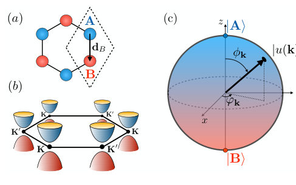
<figcaption class="paper-figure-caption"><b>Fig 1.</b> FIG. 1. (a) Honeycomb lattice with two orbitals A and B per unit cell and relative position dB. (b) Low-energy spectrum with circular CECs at the BZ corners K and K′. (c) Bloch sphere representation of the electron state |u(k)⟩. The north (south) pole maps the orbital-polarized state |A⟩(|B⟩).</figcaption>
</figure>
<figure class="paper-figure-card">
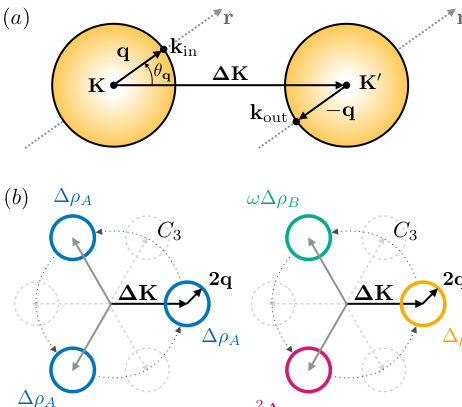
<figcaption class="paper-figure-caption"><b>Fig 2.</b> FIG. 2. (a) Elastic backscattering process coupling the pair of stationary points kin = K + q and kout = K′ −q along two CECs. (b) Orbital contributions in Fourier space showing 2q-radius rings at three intervalley vectors ∆K related by C3 symmetry: ∆ρA remains unchanged under C3 rotation, while ∆ρB picks a phase factor ω = exp(iΦB).</figcaption>
</figure>
<figure class="paper-figure-card">
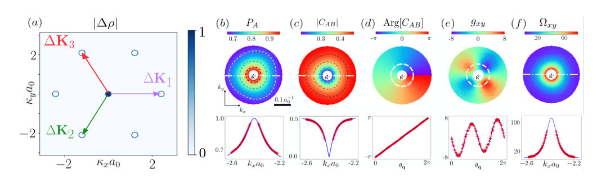
<figcaption class="paper-figure-caption"><b>Fig 3.</b> FIG. 3. (a) Unpolarized QPI map showing the LDOS intensity |∆ρ| in Fourier space at energy E = 0.15t. The vectors ∆K1,2,3 point toward intervalley backscattering intensity rings related by C3 symmetry. (b-f) 2D maps of the density matrix and geometric tensor reconstructed in valley K′ from intervalley backscattering rings as shown in panel (a): (b) population PA, (c) coherence modulus |CBA|, (d) coherence phase Arg[CBA], (e) quantum metric gxy, and (f) Berry curvature Ωxy. The components gxx, gyy, Ωxx and Ωyy are shown in Ref. [73]. The bottom row shows cuts of the QPI-reconstructed quantities (red crosses) along the white dashed lines in the 2D maps on top. They compare to their...</figcaption>
</figure>
</div>

<p><strong>Summary.</strong> This paper introduces a novel tomography technique to extract detailed electronic properties, such as the density matrix and Quantum Geometric Tensor, from standard STM QPI maps. By exploiting crystal symmetries, the method resolves orbital contributions that are otherwise averaged out by unpolarized tips. This breakthrough establishes impurities as powerful probes for mapping band structures in honeycomb materials.</p>
<p><strong>Why it may be interesting.</strong> While focused on solid-state physics, the core concept of reconstructing a full quantum state (density matrix) from limited, symmetry-averaged measurements mirrors challenges in characterizing open quantum systems where only macroscopic observables are accessible.</p>
<details>
<summary>Detailed structure</summary>
<p><strong>Main problem.</strong> The goal is to reconstruct the density matrix of electron states and the quantum geometric tensor (QGT) from quasiparticle interference (QPI) maps obtained using conventional, unpolarized scanning tunneling microscopy (STM) tips.</p>
<p><strong>Main result.</strong> The method successfully establishes impurities as tomographic probes for band structures, allowing the reconstruction of the full density matrix and QGT directly from unpolarized LDOS measurements.</p>
<p><strong>Method.</strong> It utilizes a tomography approach based on exploiting the symmetry properties (point group representations) of scattering states to disentangle orbital contributions within the total measured LDOS modulation.</p>
<p><strong>Model / system.</strong> The analysis focuses on two-orbital models defined on a honeycomb lattice, relevant for graphene heterostructures and direct-gap semiconductors. The low-energy physics is described by a $2 	imes 2$ Hamiltonian $\hat{H}(\mathbf{k})$.</p>
<p><strong>Key observables.</strong> Density matrix ($\hat{\rho}$), orbital populations ($P_\alpha$), quantum coherence ($C_{BA}$), Quantum Metric (Re[QGT]), and Berry Curvature (Im[QGT]).</p>
<p><strong>Important parameters / regimes.</strong> The analysis is sensitive to the inverse lifetime ($\eta$) which determines the width of Circularly Enriched Crystals (CECs).</p>
<p><strong>Assumptions / limitations.</strong> The method assumes that backscattering between time-reversed states maps the density matrix into distinct, symmetry-resolvable orbital contributions.</p>
<p><strong>Figures summary.</strong> Figures illustrate the honeycomb lattice structure, the low-energy spectrum near BZ corners K and K', and show visualizations of the reconstructed QGT components ($\Omega_{xy}$) in various valleys.</p>
<p><strong>Paper structure.</strong> The paper introduces the problem by defining the need for tomography; it details the methodology using symmetry analysis on the $\hat{T}$-matrix approach; it presents numerical results confirming reconstruction accuracy against theoretical models; and concludes by establishing the technique's broad applicability to hexagonal heterostructures.</p>
</details>
<details>
<summary>Abstract</summary>
<p>Characterizing electronic band structures requires precise knowledge of wave functions and their quantum geometry. Here, we introduce a tomography method to reconstruct the density matrix of electron states from quasiparticle interference maps around single impurities. We consider two-orbital models on a honeycomb lattice, relevant to graphene heterostructures and direct-gap semiconductors. For on-site impurities, backscattering between time-reversed states directly maps the density matrix populations and coherences into distinct orbital contributions in the interference map. While local probes usually lack orbital resolution, these orbital contributions transform under distinct symmetry group representations and can thus be disentangled to reveal the density matrix and quantum geometric tensor of the scattering states. This establishes impurities as tomographic probes for band structures in scanning tunneling microscopy using conventional, unpolarized tips.</p>
</details>
<p><sub><a href="#top">↑ back to top</a></sub></p>

<p><a id="paper-2606.19012"></a></p>
<h3 id="from-localized-packets-to-plane-waves-a-time-domain-approach-to-transport-in-mesoscopic-systems"><a href="http://arxiv.org/abs/2606.19012v1">From Localized Packets to Plane Waves: A Time-Domain Approach to Transport in Mesoscopic Systems</a></h3>
<p><strong>Authors:</strong> Andrzej Biborski<br>
<strong>Type:</strong> theory · <strong>Category:</strong> other · <strong>PDF:</strong> <a href="https://arxiv.org/pdf/2606.19012v1">https://arxiv.org/pdf/2606.19012v1</a><br>
<strong>Analysis basis:</strong> full PDF text, analyzed in chunks
<strong>Topic relevance:</strong> <code>non-equilibrium dynamics</code> <strong>2/5</strong> · <code>Keldysh / 2PI / non-Gaussian methods</code> <strong>1/5</strong> · <code>Kondo &amp; dissipative impurity</code> <strong>1/5</strong> · <code>methods for driven-dissipative</code> <strong>1/5</strong></p>
<div class="figure-strip-hint">↔ Scroll figures horizontally</div>
<div class="paper-figures-scroll">
<figure class="paper-figure-card">

<figcaption class="paper-figure-caption"><b>Fig 1.</b> FIG. 1. The sketch of the system considered here. L →∞in pracise .</figcaption>
</figure>
<figure class="paper-figure-card">

<figcaption class="paper-figure-caption"><b>Fig 2.</b> FIG. 2. The cartoon illustrating the simulation algorithm and its main assumptions. The simulation box is supplied with CAP on each boundary and optionally the with scat- tering center. The packet propagation can be performed in- dependently for each energy window ∆Ej. Note, that group velocity vg, as well as, the shape of packet and its oscillations generally depend on ∆Ej, that is, not only on its width but also on Ej/j−1.</figcaption>
</figure>
<figure class="paper-figure-card">

<figcaption class="paper-figure-caption"><b>Fig 3.</b> FIG. 3. Reconstruction of the direct current (DC) via Wan- nier wave packet. (a, b) Time evolution of the injected packet probability densities (|wn|2, blue curves) and the resulting to- tal current ⟨I⟩(solid black lines). Red dashed vertical lines denote the steady-state sampling window. For a sparse packet train (2N + 1 = 11, panel a), discrete source oscillations are prominent. Increasing the packet count (2N + 1 = 411, panel b) suppresses these fluctuations, smoothly recovering the con- tinuous Landauer DC limit. (c) Log-log convergence analysis. Both the absolute error of the reconstructed current ∆IN (red dots) and the standard deviation of the steady-state oscilla- tions σN I (blue...</figcaption>
</figure>
<figure class="paper-figure-card">

<figcaption class="paper-figure-caption"><b>Fig 4.</b> FIG. 5. The analysis of the formation of noiseless DC similar to that presented in Fig.3 but in the parabolic regime. Again, only small number of packets results in the fluctuations (a), whereas increase in N reproduces nearly noiseless current (b). In parabolic regime also, the ∆IN and the standard deviation of the steady-state oscillations σN I scale as ∼1/N as shown in panel (c).</figcaption>
</figure>
<figure class="paper-figure-card">

<figcaption class="paper-figure-caption"><b>Fig 5.</b> FIG. 4. Spatiotemporal evolution of a single Wannier wave packet under a parabolic dispersion relation. Panels (a)–(d) display snapshots of the propagating wave packet at successive time steps t = 0, ∆t, 2∆t, and 3∆t. The thick colored curves denote the probability density envelope |wn(x, t)|2 (left axis), whereas the thin solid black and dashed grey lines represent the real and imaginary parts of the wave function, respectively (right axis).</figcaption>
</figure>
</div>

<p><strong>Summary.</strong> The paper develops an exact time-domain formalism for quantum transport in mesoscopic systems by representing fermionic excitations as orthogonal wave packets. This approach rigorously derives Landauer conductance without relying on momentum space, and it extends to analyze complex non-linear devices like RTDs by calculating dynamic admittance from time-dependent packet evolution.</p>
<p><strong>Why it may be interesting.</strong> This work provides a powerful, alternative theoretical lens—the wave packet picture—to understand quantum transport phenomena typically analyzed using steady-state scattering matrices (Landauer/NEGF), offering insights into the underlying time dynamics.</p>
<details>
<summary>Detailed structure</summary>
<p><strong>Main problem.</strong> To establish a rigorous, self-contained time-domain construction of Landauer transport that bridges the gap between the continuous energy-domain scattering framework and a discrete, time-resolved picture.</p>
<p><strong>Main result.</strong> The formalism successfully reproduces the quantized Landauer conductance ($e^2/h$) in the time domain using orthogonal fermionic wave packets, bypassing momentum-space kinematics entirely.</p>
<p><strong>Method.</strong> It employs second quantization, defining packet creation operators via Fourier transforms and enforcing Pauli exclusion to quantize time ($\Delta t = h/eV$).</p>
<p><strong>Model / system.</strong> The study models quantum transport in mesoscopic conductors, specifically analyzing structures like the Resonant Tunneling Diode (RTD) using fermionic wave packets (Wannier states).</p>
<p><strong>Key observables.</strong> Landauer conductance ($G_0$), DC current ($\langle \hat{I}(x, t) 
angle$), dynamic admittance ($Y(\omega)$), and resonance lifetimes ($ au_i$).</p>
<p><strong>Important parameters / regimes.</strong> Temperature ($T=0$ vs $T>0$), applied bias voltage ($V_{	ext{bias}}$), energy window $[	ext{0}, eV]$, and fundamental time quantization $\Delta t = h/eV$.</p>
<p><strong>Assumptions / limitations.</strong> The initial derivation assumes the Hamiltonian is elastic, and for finite T, it uses a systematic coarse-graining approximation over disjoint energy windows.</p>
<p><strong>Figures summary.</strong> Figures illustrate current convergence from discrete oscillations to the continuous Landauer limit; they also show spatiotemporal evolution of wave packets under parabolic dispersion and the extraction of dynamic admittance components ($G(\omega), B(\omega)$) across resonance features.</p>
<p><strong>Paper structure.</strong> The paper progresses by first establishing the time-domain formalism for $T=0$ transport, then extending it to finite temperature via energy window decomposition, and finally applying this framework to analyze non-linear devices like RTDs, including AC admittance measurements.</p>
</details>
<details>
<summary>Abstract</summary>
<p>Quantum transport in mesoscopic systems is conventionally formulated within the Landauer--Büttiker scattering framework, where steady-state currents emerge from the transmission of plane waves representing propagating carriers. While highly successful, this description obscures the explicit time-domain dynamics of individual fermionic excitations and their role in establishing macroscopic transport. Here, we present an exact and self-contained time-domain construction of Landauer transport based on a discrete basis of orthogonal fermionic wave packets. Starting from a second-quantized formulation, we define packet creation operators via a continuous Fourier transform over a finite transport energy window. By encoding the Pauli exclusion principle, which enforces a fundamental temporal spacing $Δt = h/eV$, the current is reproduced in terms of orthogonal wave packets that are used for the rigorous construction of the many-body fermionic state. In this representation, a noiseless current emerges as a deterministic sequence of charge-carrying events, yielding the Landauer conductance $G_0 = e^2/h$ without invoking momentum-space kinematics. We further demonstrate that this construction remains exact for arbitrary energy dispersion. Additionally, the underlying Fock space decomposition into finite disjoint energy sub-bands renders the numerical approach highly scalable for high performance computing platforms. Our results establish a direct and rigorous bridge between the continuous scattering description of quantum transport and a discrete, time-resolved picture based on fermionic wave packets.</p>
</details>
<p><sub><a href="#top">↑ back to top</a></sub></p>

<p><a id="paper-2606.18683"></a></p>
<h3 id="counterintuitive-inverse-superconducting-transition-beyond-4he-cooling-limit"><a href="http://arxiv.org/abs/2606.18683v1">Counterintuitive inverse superconducting transition beyond 4He-cooling limit</a></h3>
<p><strong>Authors:</strong> Haowen Han, Yi Bian, Tong Ma, Yusong Zhao, Nuofu Chen, Chuanying Xi, Ze Wang, Binghui Ge, Hongliang Dong, Jia-Cai Nie, Ho-Kwang Mao, Jikun Chen<br>
<strong>Type:</strong> experiment · <strong>Category:</strong> strongly correlated electrons · <strong>PDF:</strong> <a href="https://arxiv.org/pdf/2606.18683v1">https://arxiv.org/pdf/2606.18683v1</a><br>
<strong>Analysis basis:</strong> full PDF text, analyzed in chunks
<strong>Topic relevance:</strong> <code>non-equilibrium dynamics</code> <strong>2/5</strong> · <code>driven-dissipative phase transition</code> <strong>1/5</strong> · <code>non-equilibrium universality</code> <strong>1/5</strong></p>
<div class="figure-strip-hint">↔ Scroll figures horizontally</div>
<div class="paper-figures-scroll">
<figure class="paper-figure-card">

<figcaption class="paper-figure-caption"><b>Fig 1.</b> Fig. 1 | Inverse superconducting transitions beyond 4He cooling-limit. a, Temperature-</figcaption>
</figure>
<figure class="paper-figure-card">

<figcaption class="paper-figure-caption"><b>Fig 2.</b> Fig. 2 | Mechanism underlying Kelvin-ranged inverse superconducting transition. a, High-</figcaption>
</figure>
<figure class="paper-figure-card">

<figcaption class="paper-figure-caption"><b>Fig 3.</b> Fig. 3 | Eu-based superconducting phase-diagram for inverse superconducting transitions.</figcaption>
</figure>
<figure class="paper-figure-card">

<figcaption class="paper-figure-caption"><b>Fig 4.</b> Fig. 4 | Extended framework enabling temperature-induced reentrant superconductivity.</figcaption>
</figure>
</div>

<p><strong>Summary.</strong> The authors report discovering an inverse superconducting transition—where superconductivity appears upon heating—in Eu-doped nickelates. They demonstrate this effect persists above the 4He cooling limit using high magnetic fields and current injection. This work suggests that complex magnetic interactions can fundamentally alter the thermal stability of quantum superconducting phases.</p>
<p><strong>Why it may be interesting.</strong> This work explores non-equilibrium quantum phenomena in strongly correlated materials where thermal fluctuations are not purely decohering but can actively engineer superconducting states, which is highly relevant to understanding exotic pairing mechanisms beyond BCS theory.</p>
<details>
<summary>Detailed structure</summary>
<p><strong>Main problem.</strong> The research investigates counterintuitive superconducting transitions, specifically superconductivity induced by an <em>increase</em> in temperature (inverse transition), moving beyond previously observed limits.</p>
<p><strong>Main result.</strong> They report observing field-modulated inverse superconducting transitions above the 4He-cooling limit in Eu-based infinite-layer nickelates, suggesting a mechanism involving temperature-induced magnetic field dominance.</p>
<p><strong>Method.</strong> The study relies on detailed transport measurements, including resistivity vs. temperature ($
ho$-$T$), resistivity vs. magnetic field ($
ho$-$H$), and current-voltage ($I$-$V$) characteristics under high fields.</p>
<p><strong>Model / system.</strong> The physical platform is Eu-doped infinite-layer nickelates (e.g., $    ext{EuxNd}_{1-x}    ext{NiO}_2$). The behavior is analyzed by comparing measured effective magnetic fields to theoretical upper critical fields, deviating from standard Jaccarino-Peter compensation models.</p>
<p><strong>Key observables.</strong> Zero-resistance state boundaries ($T_{c	ext{-inv}}$ and $T_c$), field dependence ($
ho$-$H$ cross-linking), current density triggering of transitions, and reemerged superconductivity at sub-Kelvin temperatures.</p>
<p><strong>Important parameters / regimes.</strong> Magnetic fields up to 35 T; temperature ranges spanning from $\sim 60 	ext{ mK}$ to several Kelvin; doping levels (overdoped/underdoped regimes).</p>
<p><strong>Assumptions / limitations.</strong> The analysis assumes that the inverse transition is governed by an alternating dominance of effective magnetic fields related to Eu$^{2+}$ compensations relative to $H_{c2}$.</p>
<p><strong>Figures summary.</strong> Figures illustrate $
ho$-$T$ curves showing the characteristic inverse superconducting dome, high-field phase diagrams mapping the boundaries between normal and superconducting states, and $I$-$V$ characteristics demonstrating current-induced transitions.</p>
<p><strong>Paper structure.</strong> The paper systematically presents evidence for the unusual superconducting phase diagram, first establishing the existence of the inverse transition ($T_{c	ext{-inv}}$), then detailing its field and current dependence, and finally proposing a mechanism based on magnetic field compensation effects.</p>
</details>
<details>
<summary>Abstract</summary>
<p>Thermally driven quantum-orders observed in exceptional instances may redefine the role of thermal-fluctuation from a source of decoherence to a resource for coherent-state engineering. While preliminary signs of counterintuitive temperature-rise-triggered superconductivity manifested in CeCu2Si2, ErRh4B4, Ho1.2Mo6S8 and (La,Ce)Al2, their critical-temperatures (Tc-inv) remain below Kelvin-range, precluding substantial applications. Here, we report field-modulated inverse-superconducting-transitions above 4He-cooling-limit in Eu-based infinite-layer nickelates (EuxNd1-xNiO2 and EuxPr1-xNiO2) grown on a substrate under both overdoped and underdoped regimes. Paradigmatically, superconductivity with zero-resistance is confined between Tc-inv (2.6-5.4 K) and another higher normal-Tc, rising and decreasing with applied magnetic-field, respectively. Starting from the resistive-state below Tc-inv, the inverse-superconducting-transition is driven by not only temperature-rising, but also current-density, while superconductivity further vanishes at higher temperature and current thresholds. The Kelvin-range inverse superconducting transition is plausibly explained by temperature-induced alternating dominance of effective magnetic-fields arising from Eu2+4f7 related compensations relative to the upper-critical-field. Furthermore, an extended-phenomenological-framework is also supported by reemerged superconductivity below 300 mK under magnetic-field, giving rise to an unprecedented temperature-induced reentrant superconductivity. Our findings establish magnetic-interaction-reconfigured high-Tc systems as fertile platforms for exploring quantum phenomena that reverse thermal-decoherence paradigm, also enabling antithetical-designs to unlock untapped application-scenarios for quantum-phase-transition devices.</p>
</details>
<p><sub><a href="#top">↑ back to top</a></sub></p>

<p><a id="paper-2606.19024"></a></p>
<h3 id="room-temperature-calcium-intercalation-into-graphite-catalyzed-by-sodium"><a href="http://arxiv.org/abs/2606.19024v1">Room-Temperature Calcium Intercalation into Graphite Catalyzed by Sodium</a></h3>
<p><strong>Authors:</strong> Akira Iyo, Shigeyuki Ishida, Hiroshi Eisaki, Hiraku Ogino, Kenji Kawashima<br>
<strong>Type:</strong> experiment · <strong>Category:</strong> other · <strong>PDF:</strong> <a href="https://arxiv.org/pdf/2606.19024v1">https://arxiv.org/pdf/2606.19024v1</a><br>
<strong>Analysis basis:</strong> full PDF text, analyzed in chunks
<strong>Topic relevance:</strong> <code>non-equilibrium dynamics</code> <strong>2/5</strong> · <code>driven-dissipative phase transition</code> <strong>1/5</strong> · <code>non-equilibrium universality</code> <strong>1/5</strong></p>
<div class="figure-strip-hint">↔ Scroll figures horizontally</div>
<div class="paper-figures-scroll">
<figure class="paper-figure-card">

<figcaption class="paper-figure-caption"><b>Fig 1.</b> FIG. 1. Experimental workflow: (a) weighing of Ca, C, and Na, (b) mixing using a zirconia mortar and pestle, (c) sealing in gold capsule or quartz tube, and (d) magnetization and XRD measurements after storage at RT for t hours.</figcaption>
</figure>
<figure class="paper-figure-card">

<figcaption class="paper-figure-caption"><b>Fig 2.</b> FIG 3. (a) XRD patterns after various storage times; (b) t-dependence of Tc; (c) √t-dependence of –4πMFC/H at 2 K and CaC₆ peak intensity ICaC6.</figcaption>
</figure>
</div>

<p><strong>Summary.</strong> This work demonstrates that sodium catalysis allows for the room-temperature synthesis of superconducting $    ext{CaC}_6$ by intercalating calcium into graphite. By monitoring magnetic susceptibility and crystal structure over time, the researchers confirmed progressive material formation, suggesting a diffusion-limited mechanism with potential applications in advanced energy storage like Ca-ion batteries.</p>
<p><strong>Why it may be interesting.</strong> While focused on solid-state chemistry/materials science, the observation of temperature-dependent superconducting transitions ($T_c$ increasing with time) and the underlying mechanism (diffusion control) touches upon non-equilibrium phase transitions relevant to condensed matter physics.</p>
<details>
<summary>Detailed structure</summary>
<p><strong>Main problem.</strong> The study addresses the challenge of forming superconducting Calcium Carbide ($   ext{CaC}_6$) via intercalation into graphite at room temperature (RT), a process previously thought to require high temperatures.</p>
<p><strong>Main result.</strong> Sodium ($  ext{Na}$) catalysis successfully enables the formation of superconducting $ ext{CaC}_6$ at RT, with superconductivity confirmed by diamagnetism and $   ext{XRD}$ peaks that evolve over time.</p>
<p><strong>Method.</strong> The researchers used a controlled experimental setup involving mixing $ ext{Ca}$, graphite, and $   ext{Na}$ precursors, followed by measurements of magnetic susceptibility (SQUID) and X-ray Diffraction ($   ext{XRD}$) as a function of storage time at RT.</p>
<p><strong>Model / system.</strong> The physical system is the intercalation reaction: $    ext{Ca} +   ext{Graphite} ( ext{C}) \xrightarrow{   ext{Na catalyst}}   ext{CaC}_6$. The process is monitored by tracking the growth of superconducting phases within a solid-state mixture.</p>
<p><strong>Key observables.</strong> Superconducting diamagnetism (Meissner effect), $  ext{XRD}$ peak intensity for $  ext{CaC}_6$, and the superconducting transition temperature ($T_c$).</p>
<p><strong>Important parameters / regimes.</strong> Storage time ($t$), which showed a square root ($\sqrt{t}$) dependence for superconducting volume fraction indicators.</p>
<p><strong>Assumptions / limitations.</strong> The process is assumed to be diffusion-controlled, leading to the $\sqrt{t}$ scaling observed in the superconducting signals.</p>
<p><strong>Figures summary.</strong> Figures illustrate the experimental workflow, temperature dependence of magnetic susceptibility versus storage time, and show how both $   ext{XRD}$ patterns and superconducting indicators scale with $\sqrt{t}$.</p>
<p><strong>Paper structure.</strong> The paper follows a structure detailing sample preparation, performing measurements over varying storage times at RT, analyzing the time evolution of superconductivity via magnetometry and structural changes via XRD.</p>
</details>
<details>
<summary>Abstract</summary>
<p>Calcium (Ca) insertion into graphite (C) has been considered to require elevated temperatures, and its occurrence at room temperature (RT) has been regarded as highly unlikely. Here, we demonstrate that sodium (Na) catalysis enables the formation of superconducting CaC$_6$ even at RT. In mixtures of Ca, Na, and graphite, the gradual development of superconducting diamagnetism and the emergence of X-ray diffraction peaks confirm the formation of CaC$_6$ during storage at RT. The superconducting transition temperature increases with storage time, and the amount of CaC$_6$ scales proportionally to the square root of storage time. These findings provide new insights into the mechanism of superconductivity and Na-catalyzed formation of CaC$_6$, and highlight the potential of this RT intercalation process for practical applications such as electrode materials in Ca-ion batteries.</p>
</details>
<p><sub><a href="#top">↑ back to top</a></sub></p>

<p><a id="paper-2606.18791"></a></p>
<h3 id="polarized-neutron-scattering-as-a-probe-for-vortex-type-spin-correlations-in-iron-oxide-multicore-assemblies"><a href="http://arxiv.org/abs/2606.18791v1">Polarized neutron scattering as a probe for vortex-type spin correlations in iron oxide multicore assemblies</a></h3>
<p><strong>Authors:</strong> Venus Rai, Ivan Titov, Elizabeth M. Jefremovas, Štefan Liščák, Sivarenjini Shan, Nina-Juliane Steinke, Jonathan Leliaert, Álvaro Gallo-Córdova, María P. Morales, Davide Peddis, Pierfrancesco Maltoni, Luis Fernández Barquín, Andreas Michels, Michael P. Adams<br>
<strong>Type:</strong> experiment · <strong>Category:</strong> other · <strong>PDF:</strong> <a href="https://arxiv.org/pdf/2606.18791v1">https://arxiv.org/pdf/2606.18791v1</a><br>
<strong>Analysis basis:</strong> full PDF text, analyzed in chunks
<strong>Topic relevance:</strong> <code>analog quantum simulation</code> <strong>1/5</strong> · <code>exotic spin models in light-matter</code> <strong>1/5</strong> · <code>spintronics-quantum-optics interface</code> <strong>1/5</strong></p>
<div class="figure-strip-hint">↔ Scroll figures horizontally</div>
<div class="paper-figures-scroll">
<figure class="paper-figure-card">

<figcaption class="paper-figure-caption"><b>Fig 1.</b> FIG. 1. (a) Transmission electron microscopy image of iron oxide nanoflowers with an average flower size of D = 220 ± 20 nm. Each nanoflower consists of nanocrystallites with an average size of about 10 nm determined from the analysis of wide-angle x-ray diffraction data [20]. (b) Room-temperature magnetization data of the 220 nm nanoflower sample (log- linear scale, only the upper right quadrant is shown). The black dots mark the field values of the SANS measurements. The inset highlights the hysteretic behavior at small fields.</figcaption>
</figure>
<figure class="paper-figure-card">

<figcaption class="paper-figure-caption"><b>Fig 2.</b> FIG. 2. (a) Two-dimensional experimental spin-flip SANS cross section dΣsf/dΩ(in cm−1) of iron oxide nanoflowers at applied magnetic fields of (a) 1.0 T and (b) 0.01 T (H0 ∥ez ⊥k0 ∥ex). The inset in (a) depicts a sin2 θ cos2 θ type angular variation of dΣsf/dΩat 1 T, which is characteristic for the saturated state. (c) Analytical prediction by the linear vortex model [Eq. (2)] using the following parameters: m1R/m0 = 100, R = 93 nm, and αc = arccos [( √</figcaption>
</figure>
<figure class="paper-figure-card">

<figcaption class="paper-figure-caption"><b>Fig 3.</b> FIG. 3. (•) Experimental ⟨Isf(q)⟩at several applied magnetic fields (see inset, log-log scale). Solid lines: fit to the linear vor- tex model [Eqs. (3)−(5)]. Inset: 2D spin-flip SANS at 0.01 T computed based on the fit results [compare to Fig. 2(b)].</figcaption>
</figure>
</div>

<p><strong>Summary.</strong> This work uses polarized small-angle neutron scattering (SANS) to experimentally map the magnetic microstructure of iron oxide nanoflowers. By analyzing the spin-flip scattering intensity at low applied fields, the researchers provide strong evidence for the formation of vortex-type magnetization states within these assemblies. This methodology demonstrates SANS's power in characterizing complex, non-uniform magnetic correlations in densely packed nanomaterials.</p>
<p><strong>Why it may be interesting.</strong> While focused on magnetism, the use of scattering techniques to probe mesoscopic, non-uniform magnetic order parameters (like vortices) provides an analogy for studying complex, spatially varying order parameters in other condensed matter systems.</p>
<details>
<summary>Detailed structure</summary>
<p><strong>Main problem.</strong> The study investigates vortex-type spin correlations within iron oxide multicore assemblies.</p>
<p><strong>Main result.</strong> Experimental measurements of the spin-flip SANS cross section reveal an isotropic ring structure at low fields, which is quantitatively consistent with theoretical predictions for flux-closure states stabilized by magnetostatic and exchange energies.</p>
<p><strong>Method.</strong> Polarized small-angle neutron scattering (SANS) was employed to probe the magnetic microstructure of the assemblies.</p>
<p><strong>Model / system.</strong> The physical system consists of iron oxide nanoflowers, modeled using a linear vortex magnetization Ansatz. The analysis compares measured spin-flip cross sections against theoretical models incorporating particle interactions via structure factors.</p>
<p><strong>Key observables.</strong> Spin-flip SANS cross section (dSigma_sf/dOmega) and its field evolution at intermediate momentum transfers (q).</p>
<p><strong>Important parameters / regimes.</strong> Low applied magnetic fields are crucial for observing vortex formation; the characteristic isotropic ring feature is key.</p>
<p><strong>Assumptions / limitations.</strong> The analysis uses an effective model incorporating the Percus-Yevick structure factor to account for dense packing and size distribution, building upon initial dilute ensemble approximations.</p>
<p><strong>Figures summary.</strong> Figure 1 shows TEM images of nanoflowers and magnetization hysteresis. Figure 2 compares experimental spin-flip scattering at different fields (1.0 T vs 0.01 T) with the linear vortex model prediction.</p>
<p><strong>Paper structure.</strong> The paper progresses from defining the physical system and theoretical framework for vortex modeling to presenting quantitative comparisons between measured SANS data and calculated cross sections, culminating in evidence supporting the vortex state formation.</p>
</details>
<details>
<summary>Abstract</summary>
<p>We report an experimental investigation of the magnetic microstructure of iron oxide multicore assemblies by means of polarized small-angle neutron scattering (SANS). Guided by a recently developed analytical theory for vortex-state magnetic nanoparticles, we provide a quantitative comparison between the measured and calculated cross sections, revealing signatures that are consistent with vortex-type magnetization configurations at low applied magnetic fields. In particular, the field evolution and the characteristic isotropic ring-type feature of the spin-flip scattering intensity at intermediate momentum transfers are in line with the formation of flux-closure states. The latter are stabilized by the interplay of exchange, Zeeman, and magnetostatic energies. The methodology allows for a statistically significant characterization of vortex states in densely packed nanoparticle systems, thereby complementing surface-sensitive techniques that are commonly limited to the observation of spin structures in individual particles.</p>
</details>
<p><sub><a href="#top">↑ back to top</a></sub></p>

<p><a id="paper-2606.18939"></a></p>
<h3 id="thermodynamic-kinetic-decoupling-enables-stable-excitonic-emission-in-defect-tolerant-cu-based-quantum-dots"><a href="http://arxiv.org/abs/2606.18939v1">Thermodynamic-Kinetic Decoupling Enables Stable Excitonic Emission in Defect-Tolerant Cu-Based Quantum Dots</a></h3>
<p><strong>Authors:</strong> Haoran Chen, Zhipeng Xu, Chunjian Li, Lei Hou, Dechao Yu, Xiaobin Xie, Yue Liu, Bohua Dong, Lixin Cao, Chenghui Xia<br>
<strong>Type:</strong> experiment · <strong>Category:</strong> other · <strong>PDF:</strong> <a href="https://arxiv.org/pdf/2606.18939v1">https://arxiv.org/pdf/2606.18939v1</a><br>
<strong>Analysis basis:</strong> full PDF text, analyzed in chunks
<strong>Topic relevance:</strong> <code>driven-dissipative phase transition</code> <strong>1/5</strong> · <code>interference shaping light</code> <strong>1/5</strong> · <code>quantum optics experiment</code> <strong>1/5</strong></p>
<div class="figure-strip-hint">↔ Scroll figures horizontally</div>
<div class="paper-figures-scroll">
<figure class="paper-figure-card">

<figcaption class="paper-figure-caption"><b>Fig 1.</b> Figure 1. Zn2+ alloying thermodynamically suppresses native defects and redirects CIS emission</figcaption>
</figure>
<figure class="paper-figure-card">

<figcaption class="paper-figure-caption"><b>Fig 2.</b> Figure 2. Ga3+ acts as a kinetic “locking” agent that stabilizes the Zn-optimized cation</figcaption>
</figure>
<figure class="paper-figure-card">

<figcaption class="paper-figure-caption"><b>Fig 3.</b> Figure 3. The thermodynamically narrowed and kinetically locked cores withstand ZnS shell</figcaption>
</figure>
<figure class="paper-figure-card">

<figcaption class="paper-figure-caption"><b>Fig 4.</b> Figure 4. Narrow, stable excitonic emission translates into reduced reabsorption losses and</figcaption>
</figure>
</div>

<p><strong>Summary.</strong> This research introduces a novel 'thermodynamic–kinetic decoupling' method to stabilize excitonic emission in defect-prone Cu-based quantum dots. By alloying with Zn and Ga, the researchers suppress native defects thermodynamically while kinetically locking the structure against degradation. This results in high-purity, stable emitters that significantly boost the efficiency of luminescent solar concentrators.</p>
<p><strong>Why it may be interesting.</strong> The work provides a clear, actionable framework—the 'strain-and-pin' strategy—for controlling intrinsic electronic properties in complex semiconductor materials by manipulating both their equilibrium thermodynamics and kinetic barriers.</p>
<details>
<summary>Detailed structure</summary>
<p><strong>Main problem.</strong> The primary challenge is achieving stable, narrow-band excitonic emission in defect-tolerant, heavy-metal-free quantum dots (QDs) that are prone to broad, defect-related photoluminescence.</p>
<p><strong>Main result.</strong> By implementing a thermodynamic–kinetic decoupling strategy using Zn and Ga alloying, the researchers created highly stable QDs exhibiting near-unity quantum yield and narrow excitonic emission suitable for high-efficiency devices like LSCs.</p>
<p><strong>Method.</strong> The study combines advanced synthesis techniques (cation exchange, shell growth) with rigorous characterization methods including single-dot spectroscopy, time-resolved PL, and device testing.</p>
<p><strong>Model / system.</strong> The physical system is colloidal CuInS2-based quantum dots ($   ext{CIZGS/ZnS}$), which are engineered by alloying ($  ext{Zn}^{2+}$) to thermodynamically suppress native defects and subsequently stabilizing the structure using $  ext{Ga}^{3+}$ incorporation to kinetically pin cation migration.</p>
<p><strong>Key observables.</strong> PL linewidth (narrowing from $>300 	ext{ meV}$ to $\sim 58-120 	ext{ meV}$), Quantum Yield ($\approx 98\%$), Single-photon purity ($g_2(0) = 0.06$), and External Optical Efficiency ($\eta_{opt} = 12.68\%$ in LSCs).</p>
<p><strong>Important parameters / regimes.</strong> Lattice strain induced by $ ext{Zn}^{2+}$ alloying; the energetic penalty for cation displacement (kinetic barrier); operating temperature ($T=300 	ext{ K}$).</p>
<p><strong>Assumptions / limitations.</strong> The observed spectral narrowing and stability are directly attributable to the engineered thermodynamic suppression of defects combined with kinetic stabilization against defect regeneration during processing.</p>
<p><strong>Figures summary.</strong> Figures illustrate spectral evolution across different QD compositions ($  ext{CIS}    o   ext{CIZS}   o   ext{CIZGS/ZnS}$), structural changes via STEM/XRD, and device performance metrics like $J–V$ curves for LSCs.</p>
<p><strong>Paper structure.</strong> The paper follows a logical progression: identifying the defect-limited emission problem $
ightarrow$ applying thermodynamic control ($    ext{Zn}^{2+}$ alloying) to narrow the band $
ightarrow$ addressing kinetic instability ($    ext{Ga}^{3+}$ incorporation) $
ightarrow$ demonstrating final stability and high performance in optoelectronic devices (LSCs).</p>
</details>
<details>
<summary>Abstract</summary>
<p>Colloidal quantum dots that simultaneously offer room-temperature single-photon purity and high photoluminescence quantum yield are sought for quantum optics, but remain elusive in environmentally benign materials. We introduce a thermodynamic-kinetic decoupling strategy that transforms defect-tolerant CuInS2 quantum dots into bright, narrowband, and photostable single-photon emitters. Zn2+ alloying strains the lattice, thermodynamically suppressing native copper vacancies and narrowing the emission from a broad defect band of approximately 300 meV to an excitonic line of approximately 120 meV. Ga3+ incorporation then kinetically pins the cation sublattice against Cu+ migration, preventing defect regeneration during ZnS shell growth. The resulting Cd-free core/shell dots achieve near-unity quantum yield of approximately 98% while retaining narrow excitonic emission. Critically, room-temperature single-dot spectroscopy reveals homogeneous linewidths as low as approximately 58 meV, strongly suppressed blinking, and high-purity single-photon emission with g2(0) = 0.06. This stabilized excitonic emission directly reduces reabsorption losses in luminescent solar concentrators, yielding an external optical efficiency of 12.68%. Our work establishes a generalizable framework to unlock intrinsic excitonic photophysics in ion-mobile, defect-prone semiconductors, opening a viable path toward high-performance heavy-metal-free emitters for quantum light sources.</p>
</details>
<p><sub><a href="#top">↑ back to top</a></sub></p>
<hr>
<p>
<a href="index.html">← Index</a>
 · <a href="papers_04.html">← Previous</a> · <a href="papers_06.html">Next →</a>
</p>
<hr>

</body>
</html>
